1º de Primaria · 1º Primaria (6–7 años) · Primer Ciclo (1º–2º de Primaria)
Datos del Entrenador / de la Entrenadora
Nombre y apellidos:
Curso y grupo:
Año escolar: 20____ / 20____
Centro educativo:
Docente:
Puntos EXP totales acumulados: ________ / 120 EXP · Rango alcanzado: ________________________
Pasaporte de Medallas de Gimnasio (8 Bloques Anuales — Colorea al completar cada bloque)
✓
Medalla Roca
Ej. 1–15
✓
Medalla Cascada
Ej. 16–35
✓
Medalla Trueno
Ej. 36–50
✓
Medalla Arcoíris
Ej. 51–65
✓
Medalla Alma
Ej. 66–75
✓
Medalla Pantano
Ej. 76–85
✓
Medalla Volcán
Ej. 86–100
✓
Medalla Tierra
Ej. 101–120
Índice del Cuadernillo y Registro de Progreso Anual
Este cuadernillo anual reúne 120 retos matemáticos organizados en 7 Gimnasios temáticos y la Liga Pokémon final. Anota tu puntuación EXP y consigue la firma o sello de cada bloque.
Bloque / Gimnasio
Ejercicios
Sentido LOMLOE
Progreso (EXP)
Sello / Firma
Gimnasio 1 · Numeración, Descomposición y Valor Posicional
1–15
Sentido Numérico
/ 15 EXP
Gimnasio 2 · Operaciones Aritméticas y Cálculo Mental
16–35
Sentido Numérico
/ 20 EXP
Gimnasio 3 · Magnitudes, Unidades de Medida, Tiempo y Dinero
36–50
Sentido de la Medida
/ 15 EXP
Gimnasio 4 · Geometría, Formas, Perímetros, Áreas y Espacio
51–65
Sentido Espacial
/ 15 EXP
Gimnasio 5 · Patrones, Álgebra y Pensamiento Computacional
66–75
Sentido Algebraico
/ 10 EXP
Gimnasio 6 · Tratamiento de Datos, Gráficos y Probabilidad
76–85
Sentido Estocástico
/ 10 EXP
Gimnasio 7 · Combate, Nivel y Experiencia (EXP)
86–100
Sentido Numérico
/ 15 EXP
Liga Pokémon · Retos Especiales de Ampliación
101–120
Todos los Sentidos
/ 20 EXP
Cuadernillo de Entrenador — 1º de Primaria
1º Primaria (6–7 años)
0–25 EXP: Novato26–50 EXP: Entrenador51–80 EXP: As de Gimnasio81–100 EXP: Líder101–120 EXP: Maestro Pokémon
Entrenador/a:
Fecha:
Puntos EXP: ____ / 120
¡Misión de Entrenamiento! Lee cada historia con atención, resuelve el reto en la cuadrícula y suma +1 EXP por cada reto superado.
Parte 1: Enunciados de los Problemas (1 al 100)
Gimnasio 1 · Numeración, Descomposición y Valor Posicional
El Profesor Oak entrega a Ash una Pokédex nueva en el laboratorio de Pueblo Paleta. Al enfocar a Pikachu, la pantalla muestra que ocupa el número 25.
Reto: ¿Cuántas decenas y cuántas unidades forman el número 25 de Pikachu?
💡 Pista de Rotom Dex: Coloca cada cifra en su posición (UM, C, D, U) y compáralas ordenadamente de izquierda a derecha.
Problema 2: Los Caterpie del Bosque Verde
#010 Caterpie
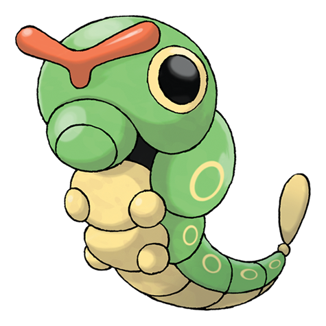
Durante su paseo por el Bosque Verde, Ash y Pikachu cuentan con mucha calma todos los Caterpie que descansan sobre las hojas de los árboles. En total anotan 47 Caterpie.
Reto: Descompón el número 47 en decenas y unidades y escribe la suma de sus valores.
💡 Pista de Rotom Dex: Coloca cada cifra en su posición (UM, C, D, U) y compáralas ordenadamente de izquierda a derecha.
Problema 3: Las Bayas Aranja de Brock
#074 Geodude
Brock ordena su mochila antes de salir de excursión y cuenta exactamente 59 Bayas Aranja para dar energía a sus Pokémon.
Reto: ¿Cuál es el número anterior y cuál es el número posterior a 59?
💡 Pista de Rotom Dex: Coloca cada cifra en su posición (UM, C, D, U) y compáralas ordenadamente de izquierda a derecha.
Problema 4: La báscula del Gimnasio Plateada: ¿quién pesa más?
#025 Pikachu
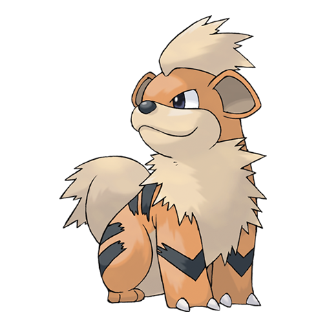
Brock pesa a cuatro Pokémon amigos en la báscula del gimnasio: Pikachu pesa 6 kg, Growlithe pesa 19 kg, Geodude pesa 20 kg y Ponyta pesa 30 kg.
Reto: Ordena los cuatro pesos de menor a mayor usando el signo < (menor que).
💡 Pista de Rotom Dex: Pasa todas las medidas a la misma unidad antes de comparar, sumar o multiplicar.
Problema 5: Las cajas de Poké Balls de Gary
#133 Eevee
Gary guarda en su estantería 8 cajas con 10 Poké Balls en cada caja, lo que hace un total de 80 Poké Balls listas para entrenar.
Reto: ¿Cuántas decenas y cuántas unidades tiene el número 80? ¿Qué indica la cifra 0?
💡 Pista de Rotom Dex: Coloca cada cifra en su posición (UM, C, D, U) y compáralas ordenadamente de izquierda a derecha.
Problema 6: La carrera de Ponyta en la pradera
#077 Ponyta
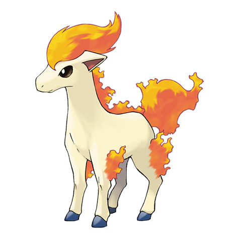
En una divertida carrera de 10 Pokémon veloces, el Ponyta de Ash cruza la meta justo detrás del corredor que llegó en 4º lugar (cuarto puesto).
Reto: ¿En qué lugar ordinal llegó a la meta el Ponyta de Ash?
💡 Pista de Rotom Dex: Coloca cada cifra en su posición (UM, C, D, U) y compáralas ordenadamente de izquierda a derecha.
Problema 7: Las cestas pares e impares de Bulbasaur
#001 Bulbasaur
Bulbasaur recoge bayas del bosque y coloca distintas cantidades en cinco cestas: 12, 25, 38, 41 y 54 bayas.
Reto: Clasifica cada uno de estos cinco números indicando cuáles son pares y cuáles son impares.
💡 Pista de Rotom Dex: Descompón el número según el valor posicional de cada cifra antes de comparar u ordenar.
Problema 8: Ordenando cartas Pokémon de Ritchie
#393 Piplup
Ritchie colecciona cartas de combate con estos puntos escritos en la esquina: 64, 46, 82 y 28 puntos.
Reto: Ordena los cuatro números de menor a mayor utilizando el símbolo < (menor que).
💡 Pista de Rotom Dex: Coloca cada cifra en su posición (UM, C, D, U) y compáralas ordenadamente de izquierda a derecha.
Problema 9: Las monedas brillantes de Meowth
#052 Meowth
Meowth encuentra una bolsa con 73 monedas brillantes escondida debajo de un árbol y las cuenta muy contento.
Reto: ¿Cuál es el valor de la cifra 7 en el número 73 y cuántas unidades representa?
💡 Pista de Rotom Dex: Anota el precio de cada artículo que compras y, si te piden el cambio, réstaselo al dinero entregado.
Problema 10: El candado secreto del Profesor Oak
#001 Bulbasaur
El maletín del Profesor Oak se abre con un código de 2 cifras. En una nota escribió esta pista: «El código tiene 6 decenas y 4 unidades».
Reto: ¿Cuál es el número de 2 cifras que abre el maletín del Profesor Oak?
💡 Pista de Rotom Dex: Coloca cada cifra en su posición (UM, C, D, U) y compáralas ordenadamente de izquierda a derecha.
Problema 11: Las dos cartas de los Unown
#201 Unown
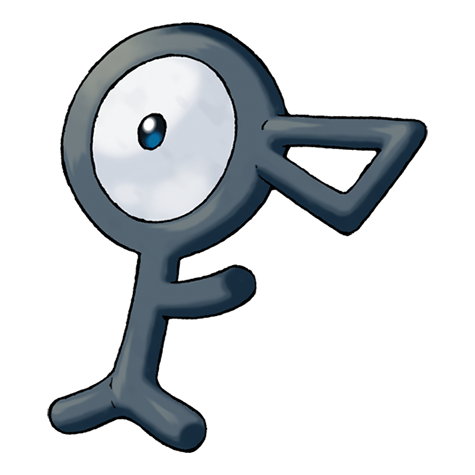
En las Ruinas Alfa, dos Unown muestran dos cartas con las cifras 3 y 8. Debes usar las dos cartas una sola vez para formar números de 2 cifras.
Reto: ¿Cuál es el número más grande y cuál es el número más pequeño de 2 cifras que puedes formar con 3 y 8?
💡 Pista de Rotom Dex: Descompón el número según el valor posicional de cada cifra antes de comparar u ordenar.
Problema 12: La fila del Centro Pokémon
#113 Chansey
Diez entrenadores hacen fila en el Centro Pokémon para revisar a sus compañeros. La Enfermera Joy acaba de atender al 7º entrenador (séptimo).
Reto: ¿Qué puesto ordinal ocupa el siguiente entrenador que va a entrar y quién va justo detrás de él?
💡 Pista de Rotom Dex: Coloca cada cifra en su posición (UM, C, D, U) y compáralas ordenadamente de izquierda a derecha.
Problema 13: Comparando las bayas de Ash y Misty
#120 Staryu
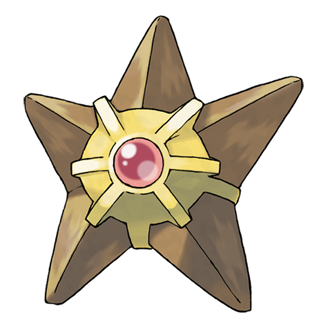
Al volver del bosque, Ash cuenta 57 bayas en su cesta y Misty cuenta 75 bayas en la suya.
Reto: Compara 57 y 75 con el signo > o < y di quién recogió más bayas.
💡 Pista de Rotom Dex: Descompón el número según el valor posicional de cada cifra antes de comparar u ordenar.
Problema 14: Los cromos del álbum de Ash
#007 Squirtle
Ash pega con cuidado sus cromos de Pokémon en un álbum nuevo y ya ha reunido 68 cromos.
Reto: Escribe con palabras cómo se lee el número 68 y descompónlo en decenas y unidades.
💡 Pista de Rotom Dex: Coloca cada cifra en su posición (UM, C, D, U) y compáralas ordenadamente de izquierda a derecha.
Problema 15: Entradas pares para el concierto de Jigglypuff
#039 Jigglypuff
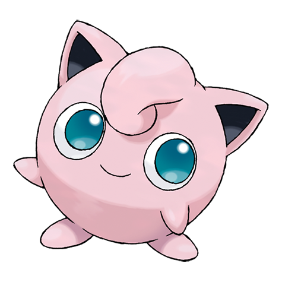
En la puerta del escenario reparten entradas con estos números: 19, 24, 30, 47 y 86. Solo las entradas con número par pasan a la primera fila.
Reto: ¿Cuáles de estos cinco números de entrada son pares y pasan a la primera fila?
💡 Pista de Rotom Dex: Coloca cada cifra en su posición (UM, C, D, U) y compáralas ordenadamente de izquierda a derecha.
Gimnasio 2 · Operaciones Aritméticas y Cálculo Mental
Antes de empezar su viaje, Ash saca 24 Poké Balls de su mochila y Misty saca 13 Poké Balls de la suya.
Reto: ¿Cuántas Poké Balls tienen entre los dos en total?
💡 Pista de Rotom Dex: Identifica si el problema pide juntar (sumar), comparar/quitar (restar), repetir (multiplicar) o repartir (dividir).
Problema 17: Pacientes en el Centro Pokémon
#113 Chansey
La Enfermera Joy tiene mucho trabajo hoy: por la mañana cuida a 32 Pokémon cansados y por la tarde atiende a 15 Pokémon más.
Reto: ¿A cuántos Pokémon atiende la Enfermera Joy en todo el día?
💡 Pista de Rotom Dex: Identifica si el problema pide juntar (sumar), comparar/quitar (restar), repetir (multiplicar) o repartir (dividir).
Problema 18: La pirámide de bayas de Caterpie
#010 Caterpie
Caterpie construye una pirámide con bolsas de bayas. Cada bolsa de arriba tiene la suma de las dos bolsas que están justo debajo. En la fila de abajo hay 11, 12 y 14 bayas.
( ? )
( ? ) ( ? )
(11) (12) (14)
Reto: Calcula cuántas bayas van en las dos bolsas del medio y cuántas van en la bolsa de la cima.
💡 Pista de Rotom Dex: Identifica si el problema pide juntar (sumar), comparar/quitar (restar), repetir (multiplicar) o repartir (dividir).
Problema 19: Las Safari Balls de Ash
#054 Psyduck
Al salir de la Zona Safari, a Ash le quedan 23 Safari Balls en el bolsillo. El guarda le dice que lanzó 15 Safari Balls durante el paseo.
Reto: ¿Cuántas Safari Balls tenía Ash al entrar en la Zona Safari?
💡 Pista de Rotom Dex: Identifica si el problema pide juntar (sumar), comparar/quitar (restar), repetir (multiplicar) o repartir (dividir).
Problema 20: Las galletas de Brock en el Bosque Verde
#074 Geodude
Brock sale de viaje con 48 galletas Pokémon. Durante el descanso reparte 12 galletas a Geodude y luego encuentra un paquete nuevo con 10 galletas.
Reto: ¿Cuántas galletas tiene Brock al terminar la excursión?
💡 Pista de Rotom Dex: Identifica si el problema pide juntar (sumar), comparar/quitar (restar), repetir (multiplicar) o repartir (dividir).
Problema 21: Puntos de Salud en el entrenamiento de Misty
#120 Staryu
El equipo de Misty comienza un entrenamiento amistoso con 68 Puntos de Salud (PS) en total. Durante los saltos en el agua pierden 24 PS.
Reto: ¿Cuántos Puntos de Salud (PS) le quedan al equipo de Misty?
💡 Pista de Rotom Dex: Sigue el orden de los turnos: resta el daño recibido y suma las curaciones sin superar el máximo.
Problema 22: El doble de bayas Zreza para Raichu
#026 Raichu
Pikachu recoge 7 bayas Zreza en un arbusto. Su amigo mayor Raichu recoge exactamente el doble de bayas que Pikachu.
Reto: ¿Cuántas bayas Zreza ha recogido Raichu?
💡 Pista de Rotom Dex: Identifica si el problema pide juntar (sumar), comparar/quitar (restar), repetir (multiplicar) o repartir (dividir).
Problema 23: La mitad de las bayas Meloc para Eevee
#133 Eevee
Serena lleva una cesta con 12 bayas Meloc y quiere darle exactamente la mitad a su Eevee.
Reto: ¿Cuántas bayas Meloc recibe Eevee?
💡 Pista de Rotom Dex: Identifica si el problema pide juntar (sumar), comparar/quitar (restar), repetir (multiplicar) o repartir (dividir).
Problema 24: Los nidos de Pidgey en el roble
#016 Pidgey
En las ramas de un gran árbol viven 4 familias de Pidgey. Cada uno de los 4 nidos tiene exactamente 2 huevos.
Reto: ¿Cuántos huevos de Pidgey hay en total en el árbol?
💡 Pista de Rotom Dex: Identifica si el problema pide juntar (sumar), comparar/quitar (restar), repetir (multiplicar) o repartir (dividir).
Problema 25: Las bandejas de bayas de Brock
#074 Geodude
A la hora de comer, Brock coloca 3 bandejas para sus Pokémon y pone 5 bayas en cada bandeja.
Reto: ¿Cuántas bayas prepara Brock en total?
💡 Pista de Rotom Dex: Comprueba si debes pasar horas a minutos (× 60) o minutos a segundos antes de sumar o restar tiempos.
Problema 26: Cajas de 10 Poké Balls en la estantería
#143 Snorlax
En la Tienda Pokémon hay 5 cajas iguales en una estantería. Dentro de cada caja hay 10 Poké Balls.
Reto: ¿Cuántas Poké Balls hay en total en las 5 cajas?
💡 Pista de Rotom Dex: Anota el precio de cada artículo que compras y, si te piden el cambio, réstaselo al dinero entregado.
Problema 27: Completando la decena de huevos con Togepi
#175 Togepi
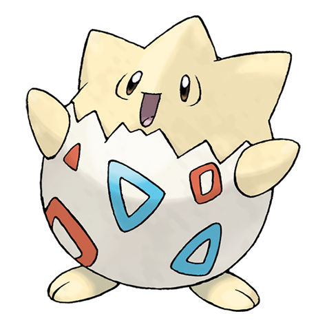
En una cesta especial caben justo 10 huevos de juguete. Togepi ya ha guardado 6 huevos dentro.
Reto: ¿Cuántos huevos faltan para llenar la cesta hasta 10?
💡 Pista de Rotom Dex: Identifica si el problema pide juntar (sumar), comparar/quitar (restar), repetir (multiplicar) o repartir (dividir).
Problema 28: El álbum de 50 pegatinas de Chansey
#113 Chansey
La Enfermera Joy tiene un álbum en el que caben 50 pegatinas de Chansey. Ya ha pegado 30 pegatinas.
Reto: ¿Cuántas pegatinas le faltan para completar el álbum?
💡 Pista de Rotom Dex: Identifica si el problema pide juntar (sumar), comparar/quitar (restar), repetir (multiplicar) o repartir (dividir).
Problema 29: La máquina numérica de Porygon
#137 Porygon
Porygon ha inventado una máquina sencilla: cuando entra un número, primero suma 12 y luego resta 2.
ENTRA → ( +12 ) → ( −2 ) → SALE
Reto: Si entran 24 puntos, ¿cuántos salen? Y si entran 35 puntos, ¿cuántos salen?
💡 Pista de Rotom Dex: Identifica si el problema pide juntar (sumar), comparar/quitar (restar), repetir (multiplicar) o repartir (dividir).
Problema 30: El doble de puntos de Voltorb
#100 Voltorb
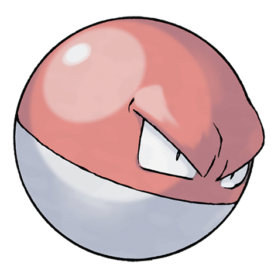
En la primera ronda del juego de luces, Voltorb consigue 20 puntos. En la segunda ronda consigue exactamente el doble de 20 puntos.
Reto: ¿Cuántos puntos consigue Voltorb en la segunda ronda?
💡 Pista de Rotom Dex: Identifica si el problema pide juntar (sumar), comparar/quitar (restar), repetir (multiplicar) o repartir (dividir).
Problema 31: La mitad de los caramelos de Jigglypuff
#039 Jigglypuff
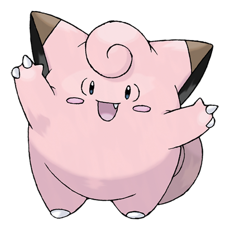
Jigglypuff tiene una bolsa con 20 caramelos de fresa y decide regalar exactamente la mitad a Clefairy.
Reto: ¿Cuántos caramelos le da Jigglypuff a Clefairy?
💡 Pista de Rotom Dex: Identifica si el problema pide juntar (sumar), comparar/quitar (restar), repetir (multiplicar) o repartir (dividir).
Problema 32: ¿A qué decena está más cerca? Los pasos de Eevee
#133 Eevee
En una recta numérica pintada en el patio, Eevee se para en el número 28 y Charmander se para en el número 42.
Reto: ¿A qué decena está más cerca 28 (a 20 o a 30)? ¿Y 42 (a 40 o a 50)?
💡 Pista de Rotom Dex: Fíjate en la cifra siguiente al orden que redondeas: si es 5 o mayor sube, y si es menor que 5 se mantiene.
Problema 33: Las bayas de los tres iniciales
#001 Bulbasaur
Los tres iniciales juntan sus meriendas sobre una manta: Bulbasaur pone 11 bayas, Charmander pone 12 bayas y Squirtle pone 15 bayas.
Reto: ¿Cuántas bayas han juntado entre los tres Pokémon?
💡 Pista de Rotom Dex: Identifica si el problema pide juntar (sumar), comparar/quitar (restar), repetir (multiplicar) o repartir (dividir).
Problema 34: ¿Qué dos cestas suman 58 bayas?
#007 Squirtle
En el campamento hay cuatro cestas con bayas: la cesta A tiene 21 bayas, la B tiene 30, la C tiene 37 y la D tiene 15. Ash necesita llevar exactamente 58 bayas usando solo dos cestas.
Reto: ¿Qué dos cestas tiene que elegir Ash para juntar exactamente 58 bayas?
💡 Pista de Rotom Dex: Identifica si el problema pide juntar (sumar), comparar/quitar (restar), repetir (multiplicar) o repartir (dividir).
Problema 35: El doble de fichas de Staryu y Starmie
#120 Staryu
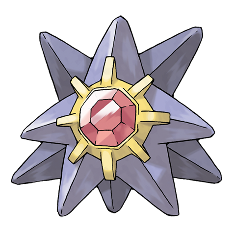
Staryu gana 13 fichas doradas en el juego acuático y Starmie gana exactamente el doble de fichas que Staryu.
Reto: ¿Cuántas fichas doradas gana Starmie?
💡 Pista de Rotom Dex: Identifica si el problema pide juntar (sumar), comparar/quitar (restar), repetir (multiplicar) o repartir (dividir).
Gimnasio 3 · Magnitudes, Unidades de Medida, Tiempo y Dinero
Ejercicios 36–50 · Sentido de la Medida · Objetivo: Medalla Trueno
Fecha: ____/____/____ · EXP del bloque: ____
Problema 36: Midiendo la altura de Bellsprout y Oddish
#069 Bellsprout
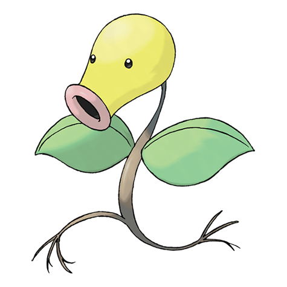
En el invernadero de Ciudad Azulona miden dos Pokémon tipo Planta: Bellsprout mide 70 cm de alto y Oddish mide 40 cm.
Reto: ¿Cuántos centímetros más alto es Bellsprout que Oddish?
💡 Pista de Rotom Dex: Pasa todas las medidas a la misma unidad antes de comparar, sumar o multiplicar.
Problema 37: Pasos por el pasillo del Laboratorio Oak
#025 Pikachu
Pikachu mide el pasillo del laboratorio caminando con cuidado: de la puerta a la mesa hay 9 pasos. Luego vuelve caminando por el mismo sitio hasta la puerta.
Reto: ¿Cuántos pasos ha dado Pikachu en total entre la ida y la vuelta?
💡 Pista de Rotom Dex: Pasa todas las medidas a la misma unidad antes de comparar, sumar o multiplicar.
Problema 38: Las mochilas en la báscula del Centro Pokémon
#113 Chansey
Antes de subir a la montaña, Ash pesa su mochila y marca 12 kg. La mochila de Brock, que lleva más comida, marca 24 kg.
Reto: ¿Cuántos kilogramos pesan las dos mochilas juntas?
💡 Pista de Rotom Dex: Pasa todas las medidas a la misma unidad antes de comparar, sumar o multiplicar.
Problema 39: Las jarras de agua para Squirtle
#007 Squirtle
Misty llena una bañera pequeña para Squirtle echando una jarra de 5 litros y otra jarra de 3 litros. Squirtle salta dentro y salpica 2 litros fuera.
Reto: ¿Cuántos litros había al principio y cuántos litros quedan en la bañera después del salto?
💡 Pista de Rotom Dex: Subraya la magnitud y su unidad de medida en cada dato antes de calcular.
Problema 40: La siesta de Pikachu en el reloj
#025 Pikachu
Pikachu se acuesta a dormir la siesta bajo un árbol cuando el reloj de agujas marca las 3:00 en punto. Se despierta muy contento a las 3:30 (las tres y media).
Reto: ¿Cuántos minutos duró la siesta de Pikachu?
💡 Pista de Rotom Dex: La aguja corta señala la hora y la aguja larga los minutos: arriba es «en punto» y abajo es «y media».
Problema 41: La merienda en el Centro Pokémon
#113 Chansey
La Enfermera Joy empieza a preparar la merienda de los Pokémon cuando el reloj marca las 5:00 en punto y termina exactamente media hora (30 minutos) después.
Reto: ¿Qué hora marca el reloj cuando la Enfermera Joy termina la merienda?
💡 Pista de Rotom Dex: La aguja corta señala la hora y la aguja larga los minutos: arriba es «en punto» y abajo es «y media».
Problema 42: El tren hacia Ciudad Celeste
#025 Pikachu
Ash y Pikachu suben al tren en Pueblo Paleta cuando el reloj marca las 9:00 en punto. El viaje dura exactamente 2 horas.
Reto: ¿A qué hora en punto llega el tren a Ciudad Celeste?
💡 Pista de Rotom Dex: La aguja corta señala la hora y la aguja larga los minutos: arriba es «en punto» y abajo es «y media».
Problema 43: Comprando una Poké Ball y una Poción
#004 Charmander
En la Tienda Pokémon, una Poké Ball cuesta 2 € y una Poción cuesta 3 €. Ash compra una de cada y paga con un billete de 10 €.
Reto: ¿Cuántos euros gasta Ash en total y cuántos euros le devuelven?
💡 Pista de Rotom Dex: Anota el precio de cada artículo que compras y, si te piden el cambio, réstaselo al dinero entregado.
Problema 44: Pagando la mochila con un billete de 50 euros
#074 Geodude
Brock compra una tienda de campaña ligera para sus viajes que cuesta 30 €. En la caja entrega un billete de 50 €.
Reto: ¿Cuántos euros le tienen que devolver a Brock de cambio?
💡 Pista de Rotom Dex: Anota el precio de cada artículo que compras y, si te piden el cambio, réstaselo al dinero entregado.
Problema 45: Las monedas de céntimos de Misty
#120 Staryu
Una pegatina brillante de Staryu cuesta 70 céntimos. Misty saca de su monedero 1 moneda de 50 céntimos y 1 moneda de 20 céntimos.
Reto: ¿Cuántos céntimos tiene Misty en total? ¿Cuánto dinero le sobra si compra la pegatina?
💡 Pista de Rotom Dex: Anota el precio de cada artículo que compras y, si te piden el cambio, réstaselo al dinero entregado.
Problema 46: La hucha de billetes y monedas de Ash
#025 Pikachu
Ash abre su hucha de Pikachu para contar sus ahorros. Encuentra 1 billete de 20 €, 1 billete de 5 € y 2 monedas de 2 €.
Reto: ¿Cuántos euros tiene ahorrados Ash en total?
💡 Pista de Rotom Dex: Anota el precio de cada artículo que compras y, si te piden el cambio, réstaselo al dinero entregado.
Problema 47: Midiendo una hoja con la regla rota
#001 Bulbasaur
Bulbasaur quiere medir una hoja verde, pero su regla está rota por la punta y empieza en el 2 cm. Coloca la hoja desde el número 2 hasta el número 15.
Reto: ¿Cuántos centímetros mide de largo la hoja de Bulbasaur?
💡 Pista de Rotom Dex: Pasa todas las medidas a la misma unidad antes de comparar, sumar o multiplicar.
Problema 48: Equilibrando la balanza de Geodude
#074 Geodude
En un plato de la balanza está sentado un Geodude que pesa 20 kg. En el otro plato Brock ya ha puesto una pesa de 10 kg.
Reto: ¿Cuántos kilogramos faltan en el segundo plato para equilibrar los dos platos?
💡 Pista de Rotom Dex: Comprueba si debes pasar horas a minutos (× 60) o minutos a segundos antes de sumar o restar tiempos.
Problema 49: El horario de la mañana en el Gimnasio
#054 Psyduck
El Gimnasio de Ciudad Celeste abre por la mañana a las 8:30 (ocho y media) y cierra para descansar a las 11:30 (once y media).
Reto: ¿Cuántas horas seguidas está abierto el gimnasio durante la mañana?
💡 Pista de Rotom Dex: La aguja corta señala la hora y la aguja larga los minutos: arriba es «en punto» y abajo es «y media».
Problema 50: El calendario de la semana de Pikachu
#025 Pikachu
Hoy es lunes, día 12 del mes. Ash apunta en su calendario que dentro de exactamente 1 semana (7 días) se celebrará el festival de Pueblo Paleta.
Reto: ¿Qué día de la semana y qué número del mes se celebrará el festival?
💡 Pista de Rotom Dex: Comprueba si debes pasar horas a minutos (× 60) o minutos a segundos antes de sumar o restar tiempos.
Gimnasio 4 · Geometría, Formas, Perímetros, Áreas y Espacio
El Profesor Oak dibuja en la pizarra la silueta plana de una Poké Ball vista de frente, formada por una línea curva cerrada perfectamente redonda.
Reto: ¿Qué figura geométrica plana es la silueta y cuántos lados rectos y vértices tiene?
💡 Pista de Rotom Dex: Identifica las caras, vértices o aristas de la figura, o multiplica sus tres dimensiones en las mismas unidades.
Problema 52: La señal triangular del sendero
#001 Bulbasaur
Ash encuentra una señal triangular en el bosque. Dentro tiene dibujada una línea recta desde la esquina de arriba hasta la mitad del lado de abajo, partiéndola en dos partes iguales.
Reto: ¿Cuántos triángulos ves en total en la señal y cuántos lados tiene cada triángulo?
💡 Pista de Rotom Dex: Haz un boceto rápido en la cuadrícula señalando lados, vértices o el radio/diámetro antes de operar.
Problema 53: El campo cuadrado de Onix
#095 Onix
El tapete donde entrena Onix tiene forma de cuadrado perfecto y cada uno de sus lados mide 4 metros.
Reto: ¿Cuántos lados y vértices tiene el cuadrado y cuántos metros mide todo su borde?
💡 Pista de Rotom Dex: Recuerda que una potencia multiplica la base por sí misma y la raíz cuadrada busca qué número al cuadrado da el total.
Problema 54: La pantalla rectangular de la Pokédex
#007 Squirtle
La pantalla de la Pokédex de Ash tiene forma de rectángulo: sus lados largos miden 6 cm y sus lados cortos miden 4 cm.
Reto: ¿Cuántos vértices tiene la pantalla y cuántos centímetros suman todos sus lados?
💡 Pista de Rotom Dex: Identifica las caras, vértices o aristas de la figura, o multiplica sus tres dimensiones en las mismas unidades.
Problema 55: Líneas rectas y curvas en el cuaderno de Jigglypuff
#039 Jigglypuff
Jigglypuff dibuja con tizas de colores 2 cuadrados (hechos con líneas rectas) y 3 círculos (hechos con líneas curvas).
Reto: ¿Cuántas figuras tienen líneas curvas y cuántos lados rectos dibujó Jigglypuff en total?
💡 Pista de Rotom Dex: Haz un boceto rápido en la cuadrícula señalando lados, vértices o el radio/diámetro antes de operar.
Problema 56: ¿Dentro o fuera de la hierba alta?
#019 Rattata
En un claro del bosque hay una gran mancha redonda de hierba alta. Dentro de la hierba hay 6 Rattata escondidos, y fuera de la hierba hay 3 Pidgey saltando.
Reto: ¿Cuántos Pokémon hay dentro de la hierba alta y cuántos hay en total en el claro?
💡 Pista de Rotom Dex: Dibuja un esquema sencillo de la figura o recorrido en la cuadrícula para visualizar los datos.
Problema 57: A la izquierda y a la derecha de Pikachu
#025 Pikachu
Siete Pokémon hacen una fila mirando hacia delante. Pikachu está justo en el medio. A su izquierda están Bulbasaur, Charmander y Squirtle; a su derecha están Eevee, Psyduck y Meowth.
Reto: ¿Cuántos Pokémon están a la derecha de Pikachu y cuántos hay a ambos lados sin contar a Pikachu?
💡 Pista de Rotom Dex: Dibuja un esquema sencillo de la figura o recorrido en la cuadrícula para visualizar los datos.
Problema 58: Contando esquinas de cartulina
#393 Piplup
Ash recorta 2 triángulos y 1 cuadrado en cartulina para decorar su cuaderno.
Reto: ¿Cuántos vértices (esquinas) tienen entre todas las figuras recortadas?
💡 Pista de Rotom Dex: Identifica las caras, vértices o aristas de la figura, o multiplica sus tres dimensiones en las mismas unidades.
Problema 59: La valla triangular del jardín de Oddish
#043 Oddish
Para proteger las flores de Oddish, Erika rodea un pequeño jardín triangular con una cuerda. Los tres lados del triángulo miden 5 metros, 6 metros y 4 metros.
Reto: ¿Cuántos metros de cuerda necesita en total para rodear todo el jardín?
💡 Pista de Rotom Dex: El perímetro se obtiene sumando las longitudes de todos los lados exteriores del contorno.
Problema 60: Las baldosas cuadradas del Centro Pokémon
#113 Chansey
La entrada del Centro Pokémon tiene baldosas cuadradas ordenadas en 3 filas, con 5 baldosas en cada fila.
Reto: ¿Cuántas baldosas cuadradas hay en total en la entrada?
💡 Pista de Rotom Dex: Dibuja un esquema sencillo de la figura o recorrido en la cuadrícula para visualizar los datos.
Problema 61: El mapa cuadriculado de Charmander
#004 Charmander
En una cuadrícula de columnas A, B, C, D (de izquierda a derecha) y filas 1, 2, 3, 4 (de abajo arriba), Charmander empieza en la casilla A1. Camina 2 casillas a la derecha y luego 2 casillas arriba.
Reto: ¿En qué casilla se detiene Charmander y cuántas casillas avanzó en total?
💡 Pista de Rotom Dex: Dibuja un esquema sencillo de la figura o recorrido en la cuadrícula para visualizar los datos.
Problema 62: Cuerpos redondos y cajas en el laboratorio
#001 Bulbasaur
Sobre la mesa hay una Poké Ball perfectamente redonda en el espacio y una caja de regalo que tiene 6 caras cuadradas iguales.
Reto: ¿Qué cuerpo geométrico es la Poké Ball, qué cuerpo geométrico es la caja y cuántas caras tiene la caja?
💡 Pista de Rotom Dex: Identifica las caras, vértices o aristas de la figura, o multiplica sus tres dimensiones en las mismas unidades.
Problema 63: Sumando lados de dos figuras
#074 Geodude
Brock coloca sobre la mesa un rectángulo de madera y al lado un triángulo de madera, separados.
Reto: ¿Cuántos lados rectos hay en total contando los de las dos figuras?
💡 Pista de Rotom Dex: Haz un boceto rápido en la cuadrícula señalando lados, vértices o el radio/diámetro antes de operar.
Problema 64: Arriba y abajo en la estantería de Oak
#007 Squirtle
En el estante de arriba de la librería hay 12 Poké Balls y en el estante de abajo hay 14 Poké Balls.
Reto: ¿Cuántas Poké Balls hay en total en la estantería y cuántas más hay abajo que arriba?
💡 Pista de Rotom Dex: Dibuja un esquema sencillo de la figura o recorrido en la cuadrícula para visualizar los datos.
Problema 65: La vuelta al recinto cuadrado de Growlithe
#058 Growlithe
Growlithe corre alrededor de un jardín cuadrado cuyos 4 lados miden 10 metros cada uno.
Reto: ¿Cuántos metros recorre Growlithe al dar una vuelta completa por todo el borde?
💡 Pista de Rotom Dex: Pasa todas las medidas a la misma unidad antes de comparar, sumar o multiplicar.
Gimnasio 5 · Patrones, Álgebra y Pensamiento Computacional
Ejercicios 66–75 · Sentido Algebraico · Objetivo: Medalla Alma
Fecha: ____/____/____ · EXP del bloque: ____
Problema 66: Las huellas de Pikachu de 2 en 2
#025 Pikachu
Pikachu camina dejando huellas numeradas de 2 en 2 en la arena: 2, 4, 6, 8, ?, 12.
Reto: ¿Qué número falta en la huella con interrogación y cuál es la regla?
💡 Pista de Rotom Dex: Busca la regla o patrón que relaciona los datos y compruébala paso a paso.
Problema 67: Los saltos de 5 en 5 de Ponyta
#077 Ponyta
Ponyta salta por piedras numeradas contando de 5 en 5: 5, 10, 15, 20, ?, 30.
Reto: ¿Qué número falta en la interrogación y qué número irá en la piedra siguiente al 30?
💡 Pista de Rotom Dex: Busca la regla o patrón que relaciona los datos y compruébala paso a paso.
Problema 68: La batería de Magnemite de 10 en 10
#081 Magnemite
El medidor de energía de Magnemite sube de 10 en 10 puntos: 10, 20, 30, ?, 50, 60.
Reto: ¿Qué número falta en la pantalla y qué número marcará después del 60?
💡 Pista de Rotom Dex: Busca la regla o patrón que relaciona los datos y compruébala paso a paso.
Problema 69: El collar de Poké Balls de colores
#054 Psyduck
Ash coloca bolas de colores en fila repitiendo siempre este orden: Roja, Azul, Amarilla, Roja, Azul, Amarilla, Roja, ...
Reto: ¿De qué color será la 8ª bola y de qué color será la 9ª bola de la fila?
💡 Pista de Rotom Dex: Busca la regla o patrón que relaciona los datos y compruébala paso a paso.
Problema 70: Cuenta atrás de 2 en 2
#052 Meowth
Un globo de juguete de Meowth despega cuando termina una cuenta atrás que baja de 2 en 2: 20, 18, 16, 14, ?, 10.
Reto: ¿Qué número de segundos falta en la cuenta atrás?
💡 Pista de Rotom Dex: Comprueba si debes pasar horas a minutos (× 60) o minutos a segundos antes de sumar o restar tiempos.
Problema 71: ¡Busca el intruso en la serie de 5 en 5!
#175 Togepi
Togepi apunta en su pizarra una serie que debería sumar 5 cada vez: 10, 15, 20, 27, 30, 35. ¡Uno de los números se ha colado por error!
Reto: ¿Cuál es el número intruso y qué número debería estar en su lugar?
💡 Pista de Rotom Dex: Comprueba cuánto cambia de un paso al siguiente o ve descartando las opciones que incumplen cada pista.
Problema 72: Los 3 pasos para atrapar a Caterpie
#010 Caterpie
Ash ha desordenado las instrucciones para encontrar y capturar un Caterpie amigo:
- A: Lanzar la Poké Ball.
- B: Buscar entre la hierba alta.
- C: Debilitar un poco a Caterpie.
Reto: ¿En qué orden (1º, 2º y 3º paso) debe seguir Ash las tres instrucciones?
💡 Pista de Rotom Dex: Pasa todas las medidas a la misma unidad antes de comparar, sumar o multiplicar.
Problema 73: La máquina de sumar 10 puntos
#004 Charmander
Una máquina del laboratorio siempre suma 10 al número que entra: si entra 14 sale 24, y si entra 25 sale 35.
Reto: ¿Qué número sale si entra 43 y qué número sale si entra 61?
💡 Pista de Rotom Dex: Busca la regla o patrón que relaciona los datos y compruébala paso a paso.
Problema 74: La regla de saltos de Bulbasaur
#001 Bulbasaur
Bulbasaur juega siguiendo esta regla: SI ve una flor azul, da 2 saltos; SI ve una flor roja, da 1 salto. En su camino encuentra 3 flores azules y 2 flores rojas.
Reto: ¿Cuántas veces salta Bulbasaur en total al pasar junto a todas las flores?
💡 Pista de Rotom Dex: Busca la regla o patrón que relaciona los datos y compruébala paso a paso.
Problema 75: Las bayas de Snorlax que bajan de 10 en 10
#143 Snorlax
Snorlax tiene una cesta con 80 bayas y cada hora se come 10. Así van bajando las bayas: 80, 70, 60, 50, ?, ?.
Reto: ¿Cuántas bayas quedarán en los dos pasos siguientes de la serie?
💡 Pista de Rotom Dex: Comprueba si debes pasar horas a minutos (× 60) o minutos a segundos antes de sumar o restar tiempos.
Gimnasio 6 · Tratamiento de Datos, Gráficos y Probabilidad
Ash anota con una rayita (|) cada Pokémon que ve durante su paseo:
Pokémon
Rayitas
Pidgey
| | | | |
Rattata
| | |
Caterpie
| | | | | |
Pikachu
| |
Reto: ¿Qué Pokémon vio más veces y cuántos Pokémon vio en total durante el paseo?
💡 Pista de Rotom Dex: Organiza los datos en una pequeña tabla o lista ordenada antes de responder.
Problema 77: El pictograma de bayas de los iniciales
#025 Pikachu
En un dibujo de la merienda, cada símbolo ★ vale exactamente 1 baya:
Pokémon
Bayas comidas
Pikachu
★ ★ ★
Charmander
★ ★ ★ ★ ★
Squirtle
★ ★
Reto: ¿Cuántas bayas comió Charmander más que Squirtle y cuántas comieron entre los tres?
💡 Pista de Rotom Dex: Organiza los datos en una pequeña tabla o lista ordenada antes de responder.
Problema 78: El gráfico de barras de la clase de 1º A
#393 Piplup
En la clase de 1º A hacen un gráfico de barras con su tipo de Pokémon favorito: la barra de Fuego llega a 8 votos, la de Agua a 6 votos, la de Planta a 5 votos y la de Eléctrico a 9 votos.
Reto: ¿Cuál es el tipo favorito de la clase y cuántos alumnos votaron en total?
💡 Pista de Rotom Dex: Lee con atención los ejes, la leyenda o el valor de cada símbolo del gráfico antes de sumar o comparar.
Problema 79: La bolsa sorpresa de Bayas Meloc
#054 Psyduck
En la Tienda Pokémon, Ash recibe una bolsa opaca que contiene únicamente 8 Bayas Meloc rosadas y ninguna otra fruta. Mete la mano sin mirar para sacar 1 baya.
Reto: Clasifica el suceso «sacar una Baya Meloc de la bolsa» como seguro, posible o imposible.
💡 Pista de Rotom Dex: Piensa si el suceso ocurre siempre (seguro), algunas veces (posible) o nunca (imposible) según los datos.
Problema 80: ¿Un Magikarp en el desierto seco?
#129 Magikarp
Ash camina por un desierto de arena muy seco donde no hay ríos, lagos ni charcos de agua. Se pregunta si podrá pescar un Magikarp salvaje nadando en la arena seca.
Reto: Clasifica el suceso «pescar un Magikarp nadando en la arena seca» como seguro, posible o imposible.
💡 Pista de Rotom Dex: Piensa si el suceso ocurre siempre (seguro), algunas veces (posible) o nunca (imposible) según los datos.
Problema 81: La caja de Poké Balls rojas y azules
#120 Staryu
Dentro de una caja cerrada, Misty guarda 5 Poké Balls rojas y 2 Super Balls azules. Va a sacar una bola con los ojos cerrados.
Reto: ¿Sacar una Super Ball azul es seguro, posible o imposible? ¿Qué bola es más probable que salga?
💡 Pista de Rotom Dex: Piensa si el suceso ocurre siempre (seguro), algunas veces (posible) o nunca (imposible) según los datos.
Problema 82: El pictograma de 2 en 2 del campamento
#074 Geodude
En el mural del campamento cada estrella ★ representa 2 Pokémon dibujados:
Entrenador
Estrellas
Brock
★ ★ ★
Misty
★ ★ ★ ★
Reto: ¿Cuántos Pokémon dibujó Brock y cuántos dibujó Misty?
💡 Pista de Rotom Dex: Organiza los datos en una pequeña tabla o lista ordenada antes de responder.
Problema 83: La tabla de caramelos de colores
#004 Charmander
Los alumnos anotan en una tabla cuántos caramelos Pokémon hay en cuatro tarros: Rojos 12, Azules 10, Verdes 14 y Amarillos 11.
Reto: ¿De qué color hay más caramelos y cuántos caramelos Rojos y Azules hay entre los dos tarros?
💡 Pista de Rotom Dex: Organiza los datos en una pequeña tabla o lista ordenada antes de responder.
Problema 84: La ruleta de premios del Centro Pokémon
#113 Chansey
La Enfermera Joy tiene una ruleta dividida en 4 partes iguales: 3 partes tienen el dibujo de una Poción y 1 parte tiene el dibujo de una Baya.
Reto: Al girar la ruleta, ¿qué premio es más probable que salga: una Poción o una Baya?
💡 Pista de Rotom Dex: Cuenta primero el total de casos posibles y después cuántos casos favorables cumplen la condición.
Problema 85: La tabla de puntos de los amigos
#039 Jigglypuff
Tres amigos apuntan sus puntos en la tabla del club:
Amigo
Puntos
Lucas
21
Sara
14
Leo
11
Reto: ¿Cuántos puntos consiguen entre los tres y cuántos puntos más tiene Lucas que Leo?
💡 Pista de Rotom Dex: Organiza los datos en una pequeña tabla o lista ordenada antes de responder.
Pikachu empieza su entrenamiento con 24 puntos de experiencia (EXP). Después de ganar un combate amistoso contra un Pidgey, gana 15 puntos de EXP más.
Reto: ¿Cuántos puntos de experiencia (EXP) tiene Pikachu ahora?
💡 Pista de Rotom Dex: Compara la EXP acumulada o ganada por combate con el objetivo necesario para alcanzar el siguiente nivel.
Problema 87: Lo que falta a Charmander para el Nivel 5
#004 Charmander
Charmander necesita juntar 50 puntos de experiencia (EXP) para subir al Nivel 5. En su ficha ya tiene acumulados 30 puntos de EXP.
Reto: ¿Cuántos puntos de EXP le faltan a Charmander para alcanzar el Nivel 5?
💡 Pista de Rotom Dex: Compara la EXP acumulada o ganada por combate con el objetivo necesario para alcanzar el siguiente nivel.
Problema 88: La Poción curativa para Squirtle
#007 Squirtle
Después de correr por la playa, Squirtle tiene solo 15 Puntos de Salud (PS). Misty le da una Poción que le cura 20 PS.
Reto: ¿Cuántos Puntos de Salud (PS) tiene Squirtle después de tomar la Poción?
💡 Pista de Rotom Dex: Sigue el orden de los turnos: resta el daño recibido y suma las curaciones sin superar el máximo.
Problema 89: La Baya Aranja de Bulbasaur
#001 Bulbasaur
En mitad de un entrenamiento, Bulbasaur tiene 28 PS y se come una rica Baya Aranja que le devuelve 10 PS.
Reto: ¿Cuántos PS tiene Bulbasaur después de comer la Baya Aranja?
💡 Pista de Rotom Dex: Sigue el orden de los turnos: resta el daño recibido y suma las curaciones sin superar el máximo.
Problema 90: El ataque Placaje contra Rattata
#019 Rattata
Un Rattata salvaje comienza un duelo amistoso con 46 PS. Eevee usa Placaje y le hace 14 puntos de daño.
Reto: ¿Cuántos PS le quedan a Rattata después del ataque?
💡 Pista de Rotom Dex: Sigue el orden de los turnos: resta el daño recibido y suma las curaciones sin superar el máximo.
Problema 91: Dos combates seguidos en la Ruta 1
#025 Pikachu
Pikachu empieza el día con 12 puntos de EXP. Gana un combate de práctica (+21 EXP) y luego otro combate contra un Caterpie (+15 EXP).
Reto: ¿Cuántos puntos de EXP tiene Pikachu al terminar los dos combates?
💡 Pista de Rotom Dex: Compara la EXP acumulada o ganada por combate con el objetivo necesario para alcanzar el siguiente nivel.
Problema 92: ¡Sin pasarse del máximo de PS de Jigglypuff!
#039 Jigglypuff
Jigglypuff tiene como máximo 45 PS (nunca puede tener más de 45 PS). Ahora mismo tiene 35 PS y la Enfermera Joy le aplica una Poción de 20 PS.
Reto: ¿Con cuántos PS se queda Jigglypuff y cuántos puntos de curación sobran sin usarse?
💡 Pista de Rotom Dex: Sigue el orden de los turnos: resta el daño recibido y suma las curaciones sin superar el máximo.
Problema 93: El Caramelo Raro de Charmander
#004 Charmander
Charmander está en el Nivel 6. Ash le da 1 Caramelo Raro que hace subir exactamente 1 nivel al instante, y después gana suficiente EXP en un combate para subir otro 1 nivel más.
Reto: ¿Qué nivel alcanza Charmander al terminar el día?
💡 Pista de Rotom Dex: Compara la EXP acumulada o ganada por combate con el objetivo necesario para alcanzar el siguiente nivel.
Problema 94: Repartiendo EXP entre Pikachu y Eevee
#025 Pikachu
Pikachu y Eevee vencen juntos en un combate por parejas y consiguen un premio de 20 puntos de EXP para repartirse a partes iguales (la mitad cada uno).
Reto: ¿Cuántos puntos de EXP recibe cada uno de los dos Pokémon?
💡 Pista de Rotom Dex: Compara la EXP acumulada o ganada por combate con el objetivo necesario para alcanzar el siguiente nivel.
Problema 95: Poción y Baya Aranja para Geodude
#074 Geodude
El Geodude de Brock tiene 23 PS tras un entrenamiento intenso. Para recuperarlo, Brock le da 1 Poción (+20 PS) y 1 Baya Aranja (+10 PS).
Reto: ¿Cuántos PS tiene Geodude después de recibir la Poción y la baya?
💡 Pista de Rotom Dex: Sigue el orden de los turnos: resta el daño recibido y suma las curaciones sin superar el máximo.
Problema 96: La meta del Nivel 8 para Squirtle
#007 Squirtle
Para alcanzar el Nivel 8 hacen falta 80 puntos de EXP. Squirtle ya tenía 40 puntos de EXP y acaba de ganar 20 puntos de EXP más.
Reto: ¿Cuántos puntos de EXP tiene Squirtle ahora y cuántos le faltan para el Nivel 8?
💡 Pista de Rotom Dex: Compara la EXP acumulada o ganada por combate con el objetivo necesario para alcanzar el siguiente nivel.
Problema 97: La tabla de EXP de la Ruta 2
#004 Charmander
En la Ruta 2, Charmander vence a 2 Caterpie y a 1 Pidgey. Mira cuánta EXP da cada uno:
Pokémon
EXP por victoria
Caterpie
10
Pidgey
15
Reto: ¿Cuántos puntos de EXP gana Charmander en total con las tres victorias?
💡 Pista de Rotom Dex: Compara la EXP acumulada o ganada por combate con el objetivo necesario para alcanzar el siguiente nivel.
Problema 98: El combate por turnos de Pikachu
#025 Pikachu
Pikachu empieza un combate con 48 PS. Turno 1: recibe un golpe de 12 PS. Turno 2: come una Baya Aranja (+10 PS). Turno 3: recibe otro golpe de 14 PS.
Reto: ¿Cuántos PS le quedan a Pikachu al terminar el turno 3?
💡 Pista de Rotom Dex: Sigue el orden de los turnos: resta el daño recibido y suma las curaciones sin superar el máximo.
Problema 99: Comparando la EXP de Bulbasaur y Charmander
#001 Bulbasaur
Después de entrenar toda la semana, Bulbasaur tiene 67 puntos de EXP y Charmander tiene 52 puntos de EXP.
Reto: ¿Cuántos puntos de EXP tiene Bulbasaur más que Charmander?
💡 Pista de Rotom Dex: Comprueba si debes pasar horas a minutos (× 60) o minutos a segundos antes de sumar o restar tiempos.
Problema 100: El gran salto de Pikachu al Nivel 9
#025 Pikachu
Pikachu tiene acumulados 54 puntos de EXP y necesita llegar a 95 puntos de EXP para subir al Nivel 9. En su combate final gana 31 puntos de EXP.
Reto: ¿Cuántos puntos de EXP tiene Pikachu después del combate y cuántos le faltan todavía para llegar a 95?
💡 Pista de Rotom Dex: Compara la EXP acumulada o ganada por combate con el objetivo necesario para alcanzar el siguiente nivel.
Parte 1B: Retos Especiales (101 al 120)
Liga Pokémon · Retos Especiales de Ampliación
Ejercicios 101–120 · Todos los Sentidos · Objetivo: Medalla Tierra
Fecha: ____/____/____ · EXP del bloque: ____
Reto 101: Pokédex misteriosa: ¿quién se esconde?
#001 Bulbasaur
La Pokédex muestra una sombra negra con estas pistas: «Mi número tiene 2 cifras. Tengo 2 decenas. Mi cifra de las unidades es 5». Sospechosos: Bulbasaur (1), Rattata (19), Ekans (23), Pikachu (25) y Meowth (52).
Reto: Usa las pistas para descartar sospechosos. ¿Qué Pokémon se esconde y qué número tiene?
💡 Pista de Rotom Dex: Coloca cada cifra en su posición (UM, C, D, U) y compáralas ordenadamente de izquierda a derecha.
Reto 102: Deducción en el Laboratorio Oak
#001 Bulbasaur
Tres amigos, Sara, Leo y Lucas, eligen cada uno un inicial distinto: Bulbasaur (n.º 1, Planta), Charmander (n.º 4, Fuego) o Squirtle (n.º 7, Agua). Pistas: (1) Sara no elige ni Fuego ni Agua. (2) Leo no elige a Squirtle.
Reto: ¿Qué Pokémon elige cada niño y cuánto suman los tres números de Pokédex juntos?
💡 Pista de Rotom Dex: Divide este reto en pasos cortos, anota los datos de cada pista y revisa al final todas las preguntas.
Reto 103: La cadena de pruebas de Misty
#120 Staryu
Para ganar una medalla de entrenamiento empiezas con 20 puntos. Prueba 1: ganas 14 puntos. Prueba 2: pierdes 10 puntos. Prueba 3: ganas el doble de 5 puntos. Misty da el premio si terminas con un número par.
Reto: ¿Con cuántos puntos terminas la cadena y consigues la medalla?
💡 Pista de Rotom Dex: Coloca cada cifra en su posición (UM, C, D, U) y compáralas ordenadamente de izquierda a derecha.
Reto 104: De compras en la Tienda Pokémon con 20 euros
#007 Squirtle
En la Tienda Pokémon los precios son: Poké Ball 2 €, Poción 3 €, Antídoto 1 € y Super Ball 5 €. Ash compra 2 Poké Balls y 2 Pociones, y paga en la caja con un billete de 20 €.
Reto: ¿Cuántos euros gasta Ash en total y cuántos euros le devuelven de cambio?
💡 Pista de Rotom Dex: Anota el precio de cada artículo que compras y, si te piden el cambio, réstaselo al dinero entregado.
Reto 105: El cuadro del torneo de 4 amigos
#074 Geodude
Cuatro amigos juegan un torneo por eliminación. El ganador de cada pareja pasa a la final:
Semifinales Final
Ash ─┐
├─ ? ─┐
Gary ─┘ ├─ CAMPEÓN
Misty ─┐ │
├─ ? ─┘
Brock ─┘
Reto: ¿Cuántos combates se juegan en todo el torneo y cuántos combates tiene que ganar el campeón?
💡 Pista de Rotom Dex: Divide este reto en pasos cortos, anota los datos de cada pista y revisa al final todas las preguntas.
Reto 106: El mapa cuadriculado del bosque
#133 Eevee
Ash está en la casilla A1 de este mapa (columnas A–D, filas 1–4):
Fila
A
B
C
D
4
🌳
🌿
🌊
Eevee
3
🌿
🌿
Caterpie
🌿
2
🌿
🌳
🌿
Psyduck
1
Ash
🌿
🌿
🌳
Reto: Si Ash avanza → → ↑ ↑ desde A1, ¿a qué casilla llega y a quién encuentra? ¿Qué Pokémon está en D2 y cuántas casillas avanzó?
💡 Pista de Rotom Dex: Divide este reto en pasos cortos, anota los datos de cada pista y revisa al final todas las preguntas.
Reto 107: La cuenta atrás del huevo de Togepi
#175 Togepi
El huevo de Togepi necesita 50 pasos para abrirse. El lunes Ash da 20 pasos y el martes da 10 pasos. Después decide dar 10 pasos cada día (miércoles, jueves...).
Reto: ¿Cuántos pasos faltan después del martes y cuántos días en total tarda en abrirse desde el lunes?
💡 Pista de Rotom Dex: Pasa todas las medidas a la misma unidad antes de comparar, sumar o multiplicar.
Reto 108: Impactrueno: dobles, mitades y ceros
#025 Pikachu
El Impactrueno de Pikachu hace 10 puntos de daño normal. Contra Squirtle (Agua) hace el doble, contra Bulbasaur (Planta) hace la mitad y contra Diglett (Tierra) hace 0 de daño.
Reto: ¿Cuánto daño recibe cada uno de los tres Pokémon y cuánto suman los tres daños juntos?
💡 Pista de Rotom Dex: Divide este reto en pasos cortos, anota los datos de cada pista y revisa al final todas las preguntas.
Reto 109: Construye tu equipo de nivel 20
#025 Pikachu
Para jugar un torneo hay que formar un equipo de 3 Pokémon distintos cuyos niveles sumen exactamente 20. Disponibles: Pikachu (nivel 10), Bulbasaur (nivel 8), Charmander (nivel 7), Squirtle (nivel 5) y Caterpie (nivel 3).
Reto: Encuentra 2 equipos distintos de 3 Pokémon que sumen exactamente 20 niveles.
💡 Pista de Rotom Dex: Divide este reto en pasos cortos, anota los datos de cada pista y revisa al final todas las preguntas.
Reto 110: El candado de 2 cifras del Team Rocket
#052 Meowth
Meowth ha cerrado una caja de juguetes con un candado de 2 cifras. Cada cifra es el número que sigue en una serie:
- Primera cifra: 2, 4, 6, ?
- Segunda cifra: 20, 15, 10, ?
Reto: Descubre la regla de cada serie y escribe el código de 2 cifras que abre la caja.
💡 Pista de Rotom Dex: Comprueba cuánto cambia de un paso al siguiente o ve descartando las opciones que incumplen cada pista.
Reto 111: ¡Encuentra el error de Ash!
#133 Eevee
Ash quiere sumar 34 bayas y 5 bayas. Al colocarlas en vertical pone el 5 debajo del 3 en vez de ponerlo debajo del 4, y dice muy seguro: «¡Tengo 84 bayas!».
Reto: ¿En qué se equivocó Ash y cuántas bayas tiene en realidad al hacer bien la suma?
💡 Pista de Rotom Dex: Divide este reto en pasos cortos, anota los datos de cada pista y revisa al final todas las preguntas.
Reto 112: ¿Caben todos en el autobús escolar?
#001 Bulbasaur
El autobús del campamento Pokémon tiene 49 lugares. Suben 21 alumnos de 1º A y 24 alumnos de 1º B.
Reto: ¿Cuántos alumnos suben en total? ¿Caben todos y cuántos lugares quedan libres?
💡 Pista de Rotom Dex: Divide este reto en pasos cortos, anota los datos de cada pista y revisa al final todas las preguntas.
Reto 113: El pictograma de bayas de la semana
#004 Charmander
Este pictograma muestra las bayas recogidas cada día. Cada dibujo ● vale 2 bayas:
Día
Bayas recogidas
Lunes
● ●
Martes
● ● ●
Miércoles
●
Jueves
● ● ● ●
Reto: ¿Qué día recogieron más bayas y cuántas bayas recogieron en total entre los cuatro días?
💡 Pista de Rotom Dex: Lee con atención los ejes, la leyenda o el valor de cada símbolo del gráfico antes de sumar o comparar.
Reto 114: La bolsa opaca de Poké Balls de Brock
#074 Geodude
Brock mete en una bolsa opaca 4 Poké Balls rojas y 2 Super Balls azules (no hay ninguna Ultra Ball). Ash sacará una sin mirar.
Reto: a) ¿Qué es más probable sacar? b) ¿Es seguro, posible o imposible sacar una Ultra Ball? c) ¿Cuántas Super Balls hay que añadir para que las dos sean igual de probables?
💡 Pista de Rotom Dex: Piensa si el suceso ocurre siempre (seguro), algunas veces (posible) o nunca (imposible) según los datos.
Reto 115: ¿Cuánto crece Oddish al evolucionar?
#043 Oddish
Según la Pokédex de Erika, Oddish mide 50 cm de altura y al evolucionar a Gloom pasa a medir 80 cm. Después Gloom se sube encima de una piedra plana de 15 cm de altura.
Reto: ¿Cuántos centímetros crece Oddish al evolucionar a Gloom y a qué altura total llega sobre la piedra?
💡 Pista de Rotom Dex: Pasa todas las medidas a la misma unidad antes de comparar, sumar o multiplicar.
Reto 116: La fila de atención del Centro Pokémon
#113 Chansey
El Centro Pokémon abre a las 9:00 en punto. La Enfermera Joy tarda media hora (30 minutos) en revisar a cada equipo y atiende uno tras otro: primero Ash, segundo Misty y tercero Brock.
Reto: ¿A qué hora termina la Enfermera Joy de revisar al equipo de Misty y a qué hora termina con el equipo de Brock?
💡 Pista de Rotom Dex: La aguja corta señala la hora y la aguja larga los minutos: arriba es «en punto» y abajo es «y media».
Reto 117: ¿A qué nivel sube Pikachu con la tabla?
#025 Pikachu
Esta tabla dice cuánta EXP necesita Pikachu para cada nivel. Ahora tiene 20 puntos de EXP (Nivel 2) y gana dos combates: uno de 10 EXP y otro de 30 EXP.
Nivel
EXP necesaria
2
20
3
40
4
60
5
80
Reto: ¿Cuántos puntos de EXP tiene al final, a qué nivel sube y cuánta EXP le falta para el Nivel 5?
💡 Pista de Rotom Dex: Compara la EXP acumulada o ganada por combate con el objetivo necesario para alcanzar el siguiente nivel.
Reto 118: Los corrales de palos de Brock
#074 Geodude
Brock construye corrales cuadrados con palos del mismo tamaño. Para 1 corral usa 4 palos; si pone 2 corrales pegados comparten un lado y usa 7 palos; para 3 corrales usa 10 palos.
_ _ _ _ _ _
|_| |_|_| |_|_|_|
4 7 10
Reto: ¿Cuántos palos necesita para hacer 4 corrales pegados y cuántos para 5 corrales pegados?
💡 Pista de Rotom Dex: Haz un boceto rápido en la cuadrícula señalando lados, vértices o el radio/diámetro antes de operar.
Reto 119: El reparto del doble de bayas
#120 Staryu
Ash y Misty han recogido juntos 18 bayas. Como Ash cargó la cesta, acuerdan que Ash se queda el doble de bayas que Misty (1 parte para Misty y 2 partes iguales para Ash).
Misty: [ ▢ ]
Ash: [ ▢ ][ ▢ ] Total: 18 bayas
Reto: ¿Cuántas bayas le tocan a Misty y cuántas bayas le tocan a Ash?
💡 Pista de Rotom Dex: Divide este reto en pasos cortos, anota los datos de cada pista y revisa al final todas las preguntas.
Reto 120: Gran desafío final: Squirtle contra Charmander
#007 Squirtle
En el combate amistoso final, Squirtle tiene 38 PS y Charmander tiene 25 PS. Atacan por turnos y empieza Squirtle. Pistola Agua de Squirtle hace el doble de 10 (20 de daño) contra Fuego. Ascuas de Charmander hace la mitad de 10 (5 de daño) contra Agua. Quien deje al rival en 0 PS gana, y el ganador suma 25 puntos de EXP a los 42 puntos de EXP que ya tenía.
Reto: ¿Quién gana el combate, con cuántos PS termina el ganador y cuántos puntos de EXP tiene después de ganar?
💡 Pista de Rotom Dex: Sigue el orden de los turnos: resta el daño recibido y suma las curaciones sin superar el máximo.
Apéndice del Docente — 1º Primaria (6–7 años)
Guía curricular LOMLOE (Ficha del Profesor Oak, Competencias Específicas CE1–CE8, rúbrica de evaluación) y solucionario completo paso a paso de los 120 ejercicios (sin páginas del alumno).
Ficha del Profesor Oak — Guía Curricular y LOMLOE (Docentes y Familias)
1º Primaria (6–7 años) · 120 ejercicios
Esta sección está pensada exclusivamente para profesorado y familias (se oculta automáticamente en el Modo Alumno). Resume la alineación de este cuadernillo con el currículo oficial de Primaria (LOMLOE — Real Decreto 157/2022).
Introducción Curricular y Pedagógica
El presente documento constituye el banco oficial y completo de 100 problemas matemáticos (más 20 Retos Especiales) contextualizados en el universo Pokémon para 1º de Educación Primaria, diseñado en rigurosa consonancia con la normativa educativa española (LOMLOE - Real Decreto 157/2022).
Los problemas están adaptados didáctica y lingüísticamente a alumnos de 6 y 7 años de edad (inicio del Primer Ciclo de Primaria), con números naturales del 0 al 99, sumas y restas sin llevada, dobles sencillos, aproximación a la decena más cercana, medidas básicas, reloj en punto y media, euros y céntimos, formas 2D y relaciones espaciales, series de +2/+5/+10, recuentos y probabilidad inicial, y mecánicas de combate/EXP adaptadas:
1. Subcategoría 1 (Problemas 1 al 15): Numeración, Descomposición y Valor Posicional (números del 0 al 99, decenas y unidades, anterior/posterior, comparar con < y >, pares/impares, ordinales del 1º al 10º).
2. Subcategoría 2 (Problemas 16 al 35): Operaciones Aritméticas y Cálculo Mental (sumas y restas sin llevada hasta 99, dobles sencillos, amigos del 10 y decena más cercana).
3. Subcategoría 3 (Problemas 36 al 50): Magnitudes, Unidades de Medida, Tiempo y Dinero (palmos, pasos, cm, kg, litros, horas en punto y media, monedas y billetes de euro hasta 50 €).
4. Subcategoría 4 (Problemas 51 al 65): Geometría, Formas, Perímetros, Áreas y Espacio (triángulo, cuadrado, rectángulo, círculo, líneas rectas/curvas, dentro/fuera, izquierda/derecha, conteo de lados y vértices).
5. Subcategoría 5 (Problemas 66 al 75): Patrones, Regularidades y Pensamiento Computacional (series de +2, +5, +10, patrones de colores/Poké Balls, instrucciones paso a paso).
6. Subcategoría 6 (Problemas 76 al 85): Tratamiento de la Información, Gráficos y Probabilidad (tablas de recuento sencillas, pictogramas, gráficos sencillos, seguro/posible/imposible).
7. Subcategoría 7 (Problemas 86 al 100): Mecánicas de Combate, Nivel y Experiencia (EXP) (puntos de experiencia EXP, subir de nivel, PS, Pociones +20 PS y Bayas Aranja +10 PS con números hasta 99).
Distribución por Sentidos Matemáticos LOMLOE
Sentido Matemático (RD 157/2022)
N.º ejercicios
Ejercicios
Sentido Numérico
58
1–35, 86–101, 103, 108, 111–112, 117, 119–120
Sentido de la Medida
19
36–50, 104, 107, 115–116
Sentido Espacial
17
51–65, 106, 118
Sentido Algebraico
14
66–75, 102, 105, 109–110
Sentido Estocástico
12
76–85, 113–114
Desglose por Subcategorías
Subcategoría
N.º ejercicios
Ejercicios
Subcategoría 1: Numeración, Descomposición y Valor Posicional
16
1–15, 101
Subcategoría 2: Operaciones Aritméticas y Cálculo Mental
24
16–35, 103, 111–112, 119
Subcategoría 3: Magnitudes, Unidades de Medida, Tiempo y Dinero
19
36–50, 104, 107, 115–116
Subcategoría 4: Geometría, Formas, Perímetros, Áreas y Espacio
17
51–65, 106, 118
Subcategoría 5: Patrones, Regularidades y Pensamiento Computacional
14
66–75, 102, 105, 109–110
Subcategoría 6: Tratamiento de la Información, Gráficos y Probabilidad
12
76–85, 113–114
Subcategoría 7: Mecánicas de Combate, Nivel y Experiencia (EXP)
18
86–100, 108, 117, 120
Competencias Específicas (CE1–CE8) y Criterios de Evaluación — Primer Ciclo (1º–2º de Primaria)
Competencia Específica (LOMLOE)
Criterios de Evaluación (RD 157/2022 · 1º–2º Prim.)
Lectura comprensiva de historias Pokémon y extracción de datos en 1 o 2 pasos.
CE2 · Resolver problemas aplicando estrategias y comprobación
2.1, 2.2 (1.er ciclo)
Uso de sumas, restas sin/con llevada, conteo visual y verificación de resultados.
CE3 · Formular y comprobar conjeturas sencillas guiadas
3.1, 3.2 (1.er ciclo)
Adivinanzas de la Pokédex, estimación en recta numérica y retos lógicos 101–120.
CE4 · Pensamiento computacional, patrones y algoritmos
4.1, 4.2 (1.er ciclo)
Series numéricas (+2, +5, +10), patrones de Poké Balls e instrucciones ordenadas.
CE5 · Conexiones entre ideas matemáticas y entorno cercano
5.1, 5.2 (1.er ciclo)
Relación entre numeración, relojes analógicos, monedas de euro y puntos EXP.
CE6 · Comunicar ideas y resultados con lenguaje adecuado
6.1, 6.2 (1.er ciclo)
Expresión escrita de la respuesta con unidad explícita en la zona guiada NEAE.
CE7 · Autoconfianza y gestión emocional ante retos
7.1, 7.2 (1.er ciclo)
Andamiaje con pistas de Rotom Dex y progresión motivadora de rangos de Entrenador.
CE8 · Trabajo cooperativo y respeto a la diversidad
8.1, 8.2 (1.er ciclo)
Resolución por parejas y puesta en común de distintas estrategias en clase.
Rúbrica de Evaluación Competencial (4 Niveles LOMLOE)
Dimensión
1. En inicio
2. En desarrollo
3. Adquirido
4. Excelente
Comprensión y extracción de datos
Identifica datos aislados con ayuda directa; confunde magnitudes o la pregunta.
Extrae los datos principales en problemas simples, aunque omite algún matiz en enunciados largos.
Identifica con autonomía todos los datos relevantes y comprende exactamente qué se pregunta.
Sintetiza datos explícitos e implícitos (tablas, gráficas, pistas) y detecta información superflua.
Estrategia y modelización
Elige la operación por ensayo-error sin un plan claro o sin esquema previo.
Aplica estrategias conocidas en ejercicios rutinarios con apoyo de pistas o andamiaje.
Selecciona y ordena adecuadamente las operaciones o fórmulas matemáticas necesarias.
Combina varias estrategias, valida alternativas y resuelve retos abiertos o multipaso con soltura.
Cálculo y precisión
Comete errores frecuentes en el algoritmo básico o al operar con números/unidades.
Realiza cálculos básicos correctamente, con algún fallo puntual en llevadas, decimales o conversiones.
Ejecuta los cálculos numéricos, fraccionarios o geométricos con precisión y comprueba el resultado.
Calcula con agilidad y exactitud, verifica la coherencia del orden de magnitud y detecta errores.
Comunicación y unidades
Escribe solo una cifra suelta sin explicar el proceso ni indicar las unidades.
Presenta parte del procedimiento en la cuadrícula, pero olvida unidades o redacta la respuesta incompleta.
Ordena Datos, Operación y Respuesta completa con las unidades físicas o del juego correctas.
Argumenta cada paso con vocabulario matemático preciso, gráficos claros y unidades impecables.
Recomendación de aula/casa: Se sugiere trabajar entre 2 y 3 ejercicios por sesión (o usar el botón «Ficha de sesión (5 ej.)»), animando al alumnado a organizar Datos · Operación · Respuesta en la cuadrícula NEAE antes de comprobar el solucionario.
Parte 2: Solucionario y Respuestas Razonadas (1 al 100)
Soluciones — Subcategoría 1: Numeración, Descomposición y Valor Posicional
Solución Problema 1: El número de Pikachu en la Pokédex
Datos identificados: Número de Pikachu en la Pokédex: 25.
Planteamiento y Operaciones: Separamos el número 25 en decenas y unidades:
La cifra de la izquierda (2) son las decenas: 2 decenas = 20 unidades.
La cifra de la derecha (5) son las unidades: 5 unidades.
Así: 25 = 20 + 5.
Respuesta Final: El número 25 está formado por 2 decenas y 5 unidades.
Solución Problema 2: Los Caterpie del Bosque Verde
Datos identificados: Cantidad de Caterpie contados: 47.
Planteamiento y Operaciones: Observamos las dos cifras del número 47:
El 4 está en las decenas: 4 decenas = 40 unidades.
El 7 está en las unidades: 7 unidades.
Descomposición en suma: 40 + 7 = 47.
Respuesta Final: El número 47 tiene 4 decenas y 7 unidades (40 + 7 = 47 unidades).
Solución Problema 3: Las Bayas Aranja de Brock
Datos identificados: Bayas Aranja en la mochila: 59.
Planteamiento y Operaciones: Para hallar el número anterior restamos 1 y para hallar el posterior sumamos 1:
Número anterior: 59 - 1 = 58.
Número posterior: 59 + 1 = 60.
Respuesta Final: El número anterior es 58 bayas y el número posterior es 60 bayas.
Solución Problema 4: La báscula del Gimnasio Plateada: ¿quién pesa más?
Datos identificados: Pesos: Pikachu 6 kg, Growlithe 19 kg, Geodude 20 kg y Ponyta 30 kg.
Planteamiento y Operaciones: Comparamos las decenas de cada peso:
6 tiene 0 decenas (es el menor).
19 tiene 1 decena.
20 tiene 2 decenas.
30 tiene 3 decenas (es el mayor).
Orden de menor a mayor: 6 < 19 < 20 < 30.
Respuesta Final: El orden de menor a mayor es 6 kg < 19 kg < 20 kg < 30 kg.
Solución Problema 5: Las cajas de Poké Balls de Gary
Datos identificados: Total de Poké Balls de Gary: 80.
Planteamiento y Operaciones: Analizamos las dos cifras de 80:
La cifra 8 está en las decenas: 8 decenas = 80 unidades.
La cifra 0 está en las unidades: indica que hay 0 unidades sueltas.
Respuesta Final: El número 80 tiene 8 decenas y 0 unidades; el 0 indica que hay 0 unidades sueltas.
Solución Problema 6: La carrera de Ponyta en la pradera
Datos identificados: Puesto del corredor anterior: 4º lugar (cuarto).
Planteamiento y Operaciones: Contamos los números ordinales en orden: 1º (primero), 2º (segundo), 3º (tercero), 4º (cuarto), 5º (quinto). El puesto que va justo después del 4º es el 5º.
Respuesta Final: Ponyta llegó a la meta en 5º lugar (quinto puesto).
Solución Problema 7: Las cestas pares e impares de Bulbasaur
Datos identificados: Cantidades en las cestas: 12, 25, 38, 41 y 54.
Planteamiento y Operaciones: Miramos la última cifra de cada número (las unidades):
Los números que terminan en 0, 2, 4, 6 u 8 son pares: 12 (termina en 2), 38 (en 8) y 54 (en 4).
Los números que terminan en 1, 3, 5, 7 o 9 son impares: 25 (termina en 5) y 41 (en 1).
Respuesta Final: Los números pares son 12, 38 y 54 (3 pares), y los impares son 25 y 41 (2 impares).
Solución Problema 8: Ordenando cartas Pokémon de Ritchie
Datos identificados: Puntuaciones de las cartas: 64, 46, 82 y 28.
Planteamiento y Operaciones: Comparamos las decenas de cada número: 2 decenas (28) < 4 decenas (46) < 6 decenas (64) < 8 decenas (82).
Escribimos la cadena ordenada: 28 < 46 < 64 < 82.
Respuesta Final: El orden de menor a mayor es 28 < 46 < 64 < 82 (4 números).
Solución Problema 9: Las monedas brillantes de Meowth
Datos identificados: Número total de monedas: 73.
Planteamiento y Operaciones: Identificamos el lugar de cada cifra en 73:
El 3 ocupa las unidades y vale 3 unidades.
El 7 ocupa las decenas: 7 decenas = 70 unidades.
Respuesta Final: La cifra 7 ocupa las decenas y representa 70 unidades (7 decenas).
Solución Problema 10: El candado secreto del Profesor Oak
Datos identificados: Pista: 6 decenas y 4 unidades.
Planteamiento y Operaciones: Convertimos las decenas en unidades y sumamos las unidades sueltas:
6 decenas = 60 unidades.
4 unidades = 4.
Sumamos: 60 + 4 = 64.
Respuesta Final: El código que abre el maletín es el número 64 (64 unidades).
Solución Problema 11: Las dos cartas de los Unown
Datos identificados: Cifras disponibles: 3 y 8.
Planteamiento y Operaciones: Con las cifras 3 y 8 podemos formar dos números de 2 cifras:
Ponemos el 8 en las decenas para lograr el mayor: 83.
Ponemos el 3 en las decenas para lograr el menor: 38.
Respuesta Final: El número mayor es 83 y el número menor es 38 (2 números posibles).
Solución Problema 12: La fila del Centro Pokémon
Datos identificados: Último entrenador atendido: 7º (séptimo); total en la fila: 10.
Planteamiento y Operaciones: Seguimos el orden de los números ordinales del 1º al 10º:
Después del 7º (séptimo) va el 8º (octavo).
Justo detrás del 8º va el 9º (noveno).
Respuesta Final: El siguiente ocupa el 8º puesto (octavo) y detrás va el 9º puesto (noveno).
Solución Problema 13: Comparando las bayas de Ash y Misty
Datos identificados: Bayas de Ash: 57; bayas de Misty: 75.
Planteamiento y Operaciones: Comparamos las decenas de ambos números:
75 tiene 7 decenas y 57 tiene 5 decenas.
Como 7 decenas es mayor que 5 decenas, 75 > 57 (o 57 < 75).
Respuesta Final: La comparación es 75 > 57; recogió más Misty con 75 bayas.
Solución Problema 14: Los cromos del álbum de Ash
Datos identificados: Cantidad de cromos en el álbum: 68.
Planteamiento y Operaciones: 1. Lectura en palabras: 68 se lee «sesenta y ocho».
2. Descomposición: 6 decenas (60) + 8 unidades (8) = 68.
Respuesta Final: Se lee sesenta y ocho y tiene 6 decenas y 8 unidades (60 + 8 = 68 unidades).
Solución Problema 15: Entradas pares para el concierto de Jigglypuff
Datos identificados: Números de entrada: 19, 24, 30, 47 y 86.
Planteamiento y Operaciones: Revisamos si la cifra de las unidades termina en 0, 2, 4, 6 u 8:
19 (termina en 9 -> impar).
24 (termina en 4 -> par).
30 (termina en 0 -> par).
47 (termina en 7 -> impar).
86 (termina en 6 -> par).
Respuesta Final: Pasan a la primera fila las entradas 24, 30 y 86 (3 números pares).
Soluciones — Subcategoría 2: Operaciones Aritméticas y Cálculo Mental
Solución Problema 16: Las Poké Balls de Ash y Misty
Datos identificados: Poké Balls de Ash: 24; Poké Balls de Misty: 13.
Planteamiento y Operaciones: Sumamos sin llevada las unidades con las unidades y las decenas con las decenas:
Respuesta Final: Ash tenía 38 Safari Balls al entrar.
Solución Problema 20: Las galletas de Brock en el Bosque Verde
Datos identificados: Galletas iniciales: 48; reparte: 12; encuentra: 10.
Planteamiento y Operaciones: Resolvemos en dos pasos sin llevada:
1. Restamos las que reparte: 48 - 12 = 36 galletas.
2. Sumamos las que encuentra: 36 + 10 = 46 galletas.
Respuesta Final: Brock tiene al final 46 galletas.
Solución Problema 21: Puntos de Salud en el entrenamiento de Misty
Datos identificados: PS iniciales: 68; PS perdidos: 24.
Planteamiento y Operaciones: Restamos sin llevada:
Unidades: 8 - 4 = 4.
Decenas: 6 - 2 = 4.
68 - 24 = 44 PS.
Respuesta Final: Al equipo de Misty le quedan 44 PS.
Solución Problema 22: El doble de bayas Zreza para Raichu
Datos identificados: Bayas de Pikachu: 7; Raichu recoge el doble.
Planteamiento y Operaciones: Calcular el doble de un número es sumarlo dos veces consigo mismo:
7 + 7 = 14 bayas.
Respuesta Final: Raichu ha recogido 14 bayas.
Solución Problema 23: La mitad de las bayas Meloc para Eevee
Datos identificados: Total de bayas en la cesta: 12; parte para Eevee: la mitad.
Planteamiento y Operaciones: Buscamos dos partes iguales que sumen 12:
6 + 6 = 12, así que la mitad de 12 es 6.
Respuesta Final: Eevee recibe 6 bayas.
Solución Problema 24: Los nidos de Pidgey en el roble
Datos identificados: Nidos: 4; huevos en cada nido: 2.
Planteamiento y Operaciones: Sumamos 2 cuatro veces:
2 + 2 + 2 + 2 = 8 huevos.
Respuesta Final: En total hay 8 huevos en el árbol.
Solución Problema 25: Las bandejas de bayas de Brock
Datos identificados: Bandejas: 3; bayas en cada bandeja: 5.
Planteamiento y Operaciones: Sumamos 5 tres veces:
5 + 5 + 5 = 15 bayas.
Respuesta Final: Brock prepara en total 15 bayas.
Solución Problema 26: Cajas de 10 Poké Balls en la estantería
Datos identificados: Cajas: 5; Poké Balls en cada caja: 10.
Planteamiento y Operaciones: Contamos de 10 en 10 cinco veces:
10 + 10 + 10 + 10 + 10 = 50 Poké Balls.
Respuesta Final: Hay 50 Poké Balls en total.
Solución Problema 27: Completando la decena de huevos con Togepi
Datos identificados: Capacidad de la cesta: 10; huevos dentro: 6.
Planteamiento y Operaciones: Buscamos el amigo del 10 para el 6:
6 + 4 = 10, es decir, 10 - 6 = 4 huevos.
Respuesta Final: Faltan 4 huevos para completar los 10.
Solución Problema 28: El álbum de 50 pegatinas de Chansey
Datos identificados: Pegatinas totales del álbum: 50; pegadas: 30.
Planteamiento y Operaciones: Restamos las decenas:
50 - 30 = 20 pegatinas (5 decenas menos 3 decenas son 2 decenas).
Respuesta Final: Le faltan 20 pegatinas para llenar el álbum.
Solución Problema 29: La máquina numérica de Porygon
Datos identificados: Regla: primero +12, después -2; entradas: 24 y 35.
Planteamiento y Operaciones: 1. Con 24 puntos: 24 + 12 = 36; luego 36 - 2 = 34 puntos.
2. Con 35 puntos: 35 + 12 = 47; luego 47 - 2 = 45 puntos.
Respuesta Final: Salen 34 puntos y 45 puntos.
Solución Problema 30: El doble de puntos de Voltorb
Datos identificados: Puntos en la primera ronda: 20; segunda ronda: el doble.
Planteamiento y Operaciones: El doble de 20 es sumar 20 dos veces:
20 + 20 = 40 puntos.
Respuesta Final: Voltorb consigue 40 puntos en la segunda ronda.
Solución Problema 31: La mitad de los caramelos de Jigglypuff
Datos identificados: Caramelos totales: 20; regalo: la mitad.
Planteamiento y Operaciones: Repartimos 20 en dos grupos iguales:
10 + 10 = 20, así que la mitad de 20 es 10 caramelos.
Respuesta Final: Jigglypuff le da 10 caramelos a Clefairy.
Solución Problema 32: ¿A qué decena está más cerca? Los pasos de Eevee
Datos identificados: Posición de Eevee: 28 pasos; posición de Charmander: 42 pasos.
Planteamiento y Operaciones: Contamos la distancia en la recta numérica:
Del 28 al 30 hay solo 2 pasos, y al 20 hay 8 pasos -> 28 está más cerca de 30.
Del 42 al 40 hay solo 2 pasos, y al 50 hay 8 pasos -> 42 está más cerca de 40.
Respuesta Final: El 28 está más cerca de 30 pasos y el 42 está más cerca de 40 pasos.
Solución Problema 33: Las bayas de los tres iniciales
Planteamiento y Operaciones: 1. Total echado al principio: 5 + 3 = 8 litros.
2. Agua que queda tras salpicar: 8 - 2 = 6 litros.
Respuesta Final: Había 8 litros al principio y quedan 6 litros en la bañera.
Solución Problema 40: La siesta de Pikachu en el reloj
Datos identificados: Hora de inicio: 3:00; hora de despertar: 3:30.
Planteamiento y Operaciones: Desde las 3 en punto (3:00) hasta las 3 y media (3:30) la aguja larga da media vuelta al reloj, que equivale a 30 minutos.
Respuesta Final: La siesta de Pikachu duró 30 minutos.
Solución Problema 41: La merienda en el Centro Pokémon
Datos identificados: Inicio: 5:00 (5 horas); duración: media hora (30 minutos).
Planteamiento y Operaciones: Si a las 5 en punto (5:00) le sumamos 30 minutos (media hora), la aguja pequeña sigue en el 5 y la aguja larga baja al 6: son las 5:30 (5 horas y 30 minutos).
Respuesta Final: El reloj marca las 5:30 (5 horas y 30 minutos).
Solución Problema 42: El tren hacia Ciudad Celeste
Datos identificados: Hora de salida: 9:00; duración del viaje: 2 horas.
Planteamiento y Operaciones: Sumamos 2 horas a las 9 en punto:
9 + 2 = 11 -> las 11:00 (11 horas en punto).
Respuesta Final: El tren llega a las 11:00 (11 horas en punto).
Solución Problema 43: Comprando una Poké Ball y una Poción
Datos identificados: Poké Ball: 2 €; Poción: 3 €; pago: billete de 10 €.
Planteamiento y Operaciones: 1. Gasto total: 2 + 3 = 5 €.
2. Dinero que le devuelven: 10 - 5 = 5 €.
Respuesta Final: Ash gasta 5 € y le devuelven 5 €.
Solución Problema 44: Pagando la mochila con un billete de 50 euros
Datos identificados: Precio de la compra: 30 €; billete entregado: 50 €.
Planteamiento y Operaciones: Restamos el precio al billete:
50 - 30 = 20 €.
Respuesta Final: A Brock le devuelven 20 €.
Solución Problema 45: Las monedas de céntimos de Misty
Datos identificados: Precio: 70 céntimos; monedas: 50 céntimos y 20 céntimos.
Planteamiento y Operaciones: 1. Dinero de Misty: 50 + 20 = 70 céntimos.
2. Cambio tras pagar: 70 - 70 = 0 céntimos.
Respuesta Final: Misty tiene 70 céntimos y le sobran 0 céntimos (paga justo).
Solución Problema 46: La hucha de billetes y monedas de Ash
Datos identificados: 1 billete de 20 €, 1 billete de 5 €, 2 monedas de 2 €.
Planteamiento y Operaciones: Sumamos todos los billetes y monedas:
Billetes: 20 + 5 = 25 €.
Monedas: 2 + 2 = 4 €.
Total: 25 + 4 = 29 €.
Respuesta Final: Ash tiene ahorrados 29 € en total.
Solución Problema 47: Midiendo una hoja con la regla rota
Datos identificados: Marca de inicio en la regla: 2 cm; marca final: 15 cm.
Planteamiento y Operaciones: Restamos la marca inicial a la marca final para saber los centímetros reales:
15 - 2 = 13 cm.
Respuesta Final: La hoja mide 13 cm de largo.
Solución Problema 48: Equilibrando la balanza de Geodude
Datos identificados: Peso de Geodude: 20 kg; pesa colocada: 10 kg.
Planteamiento y Operaciones: Calculamos la diferencia entre 20 y 10:
20 - 10 = 10 kg.
Respuesta Final: Faltan 10 kg para equilibrar la balanza.
Solución Problema 49: El horario de la mañana en el Gimnasio
Datos identificados: Hora de apertura: 8:30; hora de cierre: 11:30.
Planteamiento y Operaciones: Como ambos horarios terminan en «y media» (:30), contamos las horas enteras de 8:30 a 11:30:
9:30 (1 hora), 10:30 (2 horas), 11:30 (3 horas).
11 - 8 = 3 horas.
Respuesta Final: El gimnasio está abierto 3 horas seguidas.
Solución Problema 50: El calendario de la semana de Pikachu
Datos identificados: Día actual: lunes 12; tiempo hasta el festival: 1 semana (7 días).
Planteamiento y Operaciones: 1. Al pasar 1 semana entera (7 días), volvemos al mismo día de la semana: lunes.
2. Sumamos 7 días al número 12: 12 + 7 = 19.
Respuesta Final: El festival será el lunes día 19 (7 días después).
Soluciones — Subcategoría 4: Geometría, Formas, Perímetros, Áreas y Espacio
Solución Problema 51: La silueta circular de la Poké Ball
Datos identificados: Figura plana formada por una línea curva cerrada redonda.
Planteamiento y Operaciones: Una figura plana redonda limitada por una línea curva cerrada es un círculo.
Como no tiene segmentos rectos, tiene 0 lados rectos y 0 vértices.
Respuesta Final: Es un círculo y tiene 0 lados rectos y 0 vértices.
Solución Problema 52: La señal triangular del sendero
Datos identificados: Señal triangular dividida en 2 mitades por una línea recta.
Planteamiento y Operaciones: 1. Hay 2 triángulos pequeños (uno a la izquierda y otro a la derecha).
2. La señal completa forma 1 triángulo grande: 2 + 1 = 3 triángulos.
3. Cada triángulo tiene siempre 3 lados.
Respuesta Final: Se ven 3 triángulos en total y cada triángulo tiene 3 lados.
Solución Problema 53: El campo cuadrado de Onix
Datos identificados: Forma: cuadrado; medida de cada lado: 4 metros.
Planteamiento y Operaciones: 1. Un cuadrado tiene 4 lados iguales y 4 vértices.
2. Sumamos los 4 lados: 4 + 4 + 4 + 4 = 16 metros.
Respuesta Final: Tiene 4 lados y 4 vértices, y su borde mide 16 metros.
Solución Problema 54: La pantalla rectangular de la Pokédex
Datos identificados: Forma: rectángulo; lados largos: 6 cm cada uno; lados cortos: 4 cm cada uno.
Planteamiento y Operaciones: 1. Todo rectángulo tiene 4 lados y 4 vértices.
2. Suma de los 4 lados: 6 + 4 + 6 + 4 = 10 + 10 = 20 cm.
Respuesta Final: Tiene 4 vértices y sus lados suman 20 cm.
Solución Problema 55: Líneas rectas y curvas en el cuaderno de Jigglypuff
Datos identificados: Figuras dibujadas: 2 cuadrados y 3 círculos.
Planteamiento y Operaciones: 1. Los círculos están hechos con líneas curvas: son 3 círculos.
2. Cada cuadrado tiene 4 lados rectos: 4 + 4 = 8 lados rectos en total.
Respuesta Final: Hay 3 círculos con líneas curvas y dibujó 8 lados rectos en total.
Solución Problema 56: ¿Dentro o fuera de la hierba alta?
Datos identificados: Pokémon dentro de la hierba: 6; Pokémon fuera: 3.
Planteamiento y Operaciones: 1. Dentro de la hierba hay 6 Pokémon.
2. Sumamos los de dentro y los de fuera: 6 + 3 = 9 Pokémon en total.
Respuesta Final: Hay 6 Pokémon dentro y 9 Pokémon en total.
Solución Problema 57: A la izquierda y a la derecha de Pikachu
Datos identificados: A la izquierda: 3 Pokémon; a la derecha: 3 Pokémon; en el medio: Pikachu.
Planteamiento y Operaciones: 1. A la derecha de Pikachu están Eevee, Psyduck y Meowth: 3 Pokémon.
2. Sumando los de la izquierda y los de la derecha: 3 + 3 = 6 Pokémon.
Respuesta Final: A su derecha hay 3 Pokémon y a sus lados hay 6 Pokémon en total.
Solución Problema 58: Contando esquinas de cartulina
Datos identificados: Figuras: 2 triángulos y 1 cuadrado.
Planteamiento y Operaciones: Cada triángulo tiene 3 vértices y cada cuadrado tiene 4 vértices:
3 + 3 + 4 = 10 vértices.
Respuesta Final: Entre todas las figuras tienen 10 vértices.
Solución Problema 59: La valla triangular del jardín de Oddish
Datos identificados: Lados del triángulo: 5 m, 6 m y 4 m.
Planteamiento y Operaciones: Sumamos las longitudes de los 3 lados:
5 + 6 = 11; 11 + 4 = 15 metros.
Respuesta Final: Necesita 15 metros de cuerda en total.
Solución Problema 60: Las baldosas cuadradas del Centro Pokémon
Datos identificados: Filas: 3; baldosas por fila: 5.
Planteamiento y Operaciones: Sumamos las baldosas de las 3 filas:
5 + 5 + 5 = 15 baldosas.
Respuesta Final: En la entrada hay 15 baldosas cuadradas.
Solución Problema 61: El mapa cuadriculado de Charmander
Datos identificados: Inicio: A1; movimientos: 2 a la derecha y 2 hacia arriba.
Planteamiento y Operaciones: 1. Desde A1 avanzamos 2 columnas a la derecha: A1 -> B1 -> C1.
2. Subimos 2 filas hacia arriba: C1 -> C2 -> C3.
3. Total de pasos: 2 + 2 = 4 casillas.
Respuesta Final: Se detiene en la casilla C3 tras avanzar 4 casillas.
Solución Problema 62: Cuerpos redondos y cajas en el laboratorio
Datos identificados: Objeto 1: redondo como pelota; objeto 2: caja con 6 caras cuadradas iguales.
Planteamiento y Operaciones: Identificamos los cuerpos geométricos:
Un objeto redondo como una pelota es una esfera.
Una caja con 6 caras cuadradas iguales es un cubo y tiene 6 caras.
Respuesta Final: La Poké Ball es una esfera y la caja es un cubo con 6 caras.
Solución Problema 63: Sumando lados de dos figuras
Datos identificados: Figuras sobre la mesa: 1 rectángulo y 1 triángulo.
Planteamiento y Operaciones: Contamos los lados de cada figura:
El rectángulo tiene 4 lados.
El triángulo tiene 3 lados.
4 + 3 = 7 lados.
Respuesta Final: Entre las dos figuras suman 7 lados.
Solución Problema 64: Arriba y abajo en la estantería de Oak
Datos identificados: Estante de arriba: 12 Poké Balls; estante de abajo: 14 Poké Balls.
Planteamiento y Operaciones: 1. Total en la estantería: 12 + 14 = 26 Poké Balls.
2. Diferencia entre abajo y arriba: 14 - 12 = 2 Poké Balls.
Respuesta Final: Hay 26 Poké Balls en total y 2 Poké Balls más abajo.
Solución Problema 65: La vuelta al recinto cuadrado de Growlithe
Datos identificados: Forma: cuadrado (4 lados); cada lado: 10 metros.
Planteamiento y Operaciones: Sumamos los cuatro lados de 10 metros:
10 + 10 + 10 + 10 = 40 metros.
Respuesta Final: Growlithe recorre 40 metros en una vuelta.
Soluciones — Subcategoría 5: Patrones, Regularidades y Pensamiento Computacional
Solución Problema 66: Las huellas de Pikachu de 2 en 2
Datos identificados: Serie de huellas: 2, 4, 6, 8, ?, 12.
Planteamiento y Operaciones: Cada huella suma 2 unidades a la anterior (+2):
2 + 2 = 4, 4 + 2 = 6, 6 + 2 = 8, 8 + 2 = 10, 10 + 2 = 12.
Respuesta Final: Falta el número 10 (10 unidades) siguiendo la regla de sumar 2 unidades.
Solución Problema 67: Los saltos de 5 en 5 de Ponyta
Datos identificados: Serie de 5 en 5: 5, 10, 15, 20, ?, 30.
Planteamiento y Operaciones: Sumamos 5 en cada salto (+5):
Después de 20: 20 + 5 = 25.
Después de 30: 30 + 5 = 35.
Respuesta Final: Falta el 25 y después del 30 va el 35 (25 unidades y 35 unidades).
Solución Problema 68: La batería de Magnemite de 10 en 10
Datos identificados: Serie de 10 en 10: 10, 20, 30, ?, 50, 60.
Planteamiento y Operaciones: La regla es sumar 10 puntos cada vez:
30 + 10 = 40.
60 + 10 = 70.
Respuesta Final: Falta el 40 y después del 60 marcará 70 puntos.
Solución Problema 69: El collar de Poké Balls de colores
Datos identificados: Patrón que se repite: [Roja, Azul, Amarilla] (de 3 en 3); la 7ª es Roja.
Planteamiento y Operaciones: El ciclo tiene 3 colores: 1ª Roja, 2ª Azul, 3ª Amarilla; 4ª Roja, 5ª Azul, 6ª Amarilla; 7ª Roja, así que la 8ª es Azul y la 9ª es Amarilla.
Respuesta Final: La 8ª posición es Azul y la 9ª posición es Amarilla.
Solución Problema 70: Cuenta atrás de 2 en 2
Datos identificados: Cuenta atrás: 20, 18, 16, 14, ?, 10.
Planteamiento y Operaciones: La regla es restar 2 cada vez:
14 - 2 = 12 (y comprobamos: 12 - 2 = 10).
Respuesta Final: Falta el número 12 (12 segundos).
Solución Problema 71: ¡Busca el intruso en la serie de 5 en 5!
Datos identificados: Serie anotada: 10, 15, 20, 27, 30, 35; regla: +5.
Planteamiento y Operaciones: Comprobamos sumando 5: 10 + 5 = 15, 15 + 5 = 20, 20 + 5 = 25.
En lugar de 25 aparece 27, así que 27 es el intruso (25 + 5 = 30 y 30 + 5 = 35).
Respuesta Final: El intruso es 27 unidades y debería ir 25 unidades.
Solución Problema 72: Los 3 pasos para atrapar a Caterpie
Datos identificados: Instrucciones: A (Lanzar Poké Ball), B (Buscar), C (Debilitar).
Planteamiento y Operaciones: Ordenamos los 3 pasos del primero al último:
1º paso: Buscar entre la hierba alta (B).
2º paso: Debilitar un poco a Caterpie (C).
3º paso: Lanzar la Poké Ball (A).
Respuesta Final: El orden de los 3 pasos es 1º B, 2º C y 3º A.
Solución Problema 73: La máquina de sumar 10 puntos
Datos identificados: Regla: sumar 10; números que entran: 43 y 61.
Planteamiento y Operaciones: Sumamos 1 decena (+10) a cada número:
43 + 10 = 53.
61 + 10 = 71.
Respuesta Final: Salen 53 puntos y 71 puntos.
Solución Problema 74: La regla de saltos de Bulbasaur
Datos identificados: Flor azul: 2 saltos (ve 3); flor roja: 1 salto (ve 2).
Planteamiento y Operaciones: 1. Por las 3 flores azules: 2 + 2 + 2 = 6 saltos.
2. Por las 2 flores rojas: 1 + 1 = 2 saltos.
Total: 6 + 2 = 8 veces.
Respuesta Final: Bulbasaur salta en total 8 veces.
Solución Problema 75: Las bayas de Snorlax que bajan de 10 en 10
Datos identificados: Serie decreciente: 80, 70, 60, 50; regla: -10.
Planteamiento y Operaciones: Restamos 10 bayas en cada paso:
50 - 10 = 40 bayas.
40 - 10 = 30 bayas.
Respuesta Final: Quedarán 40 bayas y después 30 bayas.
Soluciones — Subcategoría 6: Tratamiento de la Información, Gráficos y Probabilidad
Solución Problema 76: La tabla de recuento de la Ruta 1
Datos identificados: Pidgey: 5; Rattata: 3; Caterpie: 6; Pikachu: 2.
Planteamiento y Operaciones: 1. Contamos las rayitas: Pidgey 5, Rattata 3, Caterpie 6, Pikachu 2.
2. El número mayor es 6 -> Caterpie.
3. Total: 5 + 3 = 8; 8 + 6 = 14; 14 + 2 = 16 Pokémon.
Respuesta Final: Vio más veces a Caterpie (6 veces) y en total vio 16 Pokémon.
Solución Problema 77: El pictograma de bayas de los iniciales
Planteamiento y Operaciones: 1. Diferencia entre Charmander y Squirtle: 5 - 2 = 3 bayas.
2. Total entre los tres: 3 + 5 + 2 = 10 bayas.
Respuesta Final: Charmander comió 3 bayas más que Squirtle y entre los tres comieron 10 bayas.
Solución Problema 78: El gráfico de barras de la clase de 1º A
Datos identificados: Votos: Fuego 8, Agua 6, Planta 5, Eléctrico 9.
Planteamiento y Operaciones: 1. La barra más alta es la de Eléctrico con 9 votos.
2. Sumamos todos los votos: 8 + 6 = 14; 14 + 5 = 19; 19 + 9 = 28 alumnos.
Respuesta Final: El favorito es Eléctrico (9 votos) y votaron 28 alumnos en total.
Solución Problema 79: La bolsa sorpresa de Bayas Meloc
Datos identificados: Contenido de la bolsa: 8 Bayas Meloc (todas son iguales).
Planteamiento y Operaciones: Como las 8 bayas que hay dentro son Bayas Meloc, cualquier baya que saque será siempre una Baya Meloc: es un suceso seguro.
Respuesta Final: Sacar una Baya Meloc es un suceso seguro (8 bayas de 8).
Solución Problema 80: ¿Un Magikarp en el desierto seco?
Datos identificados: Lugar: desierto seco sin agua; Magikarp solo vive en el agua.
Planteamiento y Operaciones: Como en la arena seca no hay agua y un pez no puede nadar sin agua, hay 0 posibilidades de que ocurra: es imposible.
Respuesta Final: Es un suceso imposible (0 posibilidades).
Solución Problema 81: La caja de Poké Balls rojas y azules
Datos identificados: En la caja: 5 Poké Balls rojas y 2 Super Balls azules.
Planteamiento y Operaciones: 1. Como hay 2 Super Balls dentro de la caja, puede salir una (pero no siempre): es posible.
2. Hay más Poké Balls rojas (5) que azules (2), así que es más probable sacar una Poké Ball roja.
Respuesta Final: Sacar una Super Ball es posible, y es más probable sacar una Poké Ball (5 frente a 2).
Solución Problema 82: El pictograma de 2 en 2 del campamento
Respuesta Final: Brock dibujó 6 Pokémon y Misty dibujó 8 Pokémon.
Solución Problema 83: La tabla de caramelos de colores
Datos identificados: Rojos: 12; Azules: 10; Verdes: 14; Amarillos: 11.
Planteamiento y Operaciones: 1. Comparamos: 14 es el mayor -> color verde.
2. Sumamos Rojos y Azules sin llevada: 12 + 10 = 22 caramelos.
Respuesta Final: Hay más de color verde (14 caramelos) y Rojos más Azules suman 22 caramelos.
Solución Problema 84: La ruleta de premios del Centro Pokémon
Datos identificados: Partes totales: 4; Poción: 3 partes; Baya: 1 parte.
Planteamiento y Operaciones: Comparamos las partes de la ruleta:
Poción ocupa 3 partes de 4, y Baya ocupa solo 1 parte de 4. Como 3 > 1, es más probable Poción.
Respuesta Final: Es más probable que salga una Poción (3 partes de 4).
Solución Problema 85: La tabla de puntos de los amigos
Planteamiento y Operaciones: Sumamos paso a paso sin llevada:
1. Tras el primer combate: 12 + 21 = 33 EXP.
2. Tras el segundo combate: 33 + 15 = 48 puntos de EXP.
Respuesta Final: Pikachu termina con 48 puntos de EXP.
Solución Problema 92: ¡Sin pasarse del máximo de PS de Jigglypuff!
Datos identificados: PS máximos: 45; PS actuales: 35; Poción: +20 PS.
Planteamiento y Operaciones: 1. Si sumamos: 35 + 20 = 55 PS, pero se pasa del máximo.
2. Como el tope es 45, Jigglypuff se queda con 45 PS.
3. Sobran sin usarse: 55 - 45 = 10 PS.
Respuesta Final: Se queda con 45 PS y sobran 10 PS de la Poción.
Solución Problema 93: El Caramelo Raro de Charmander
Datos identificados: Nivel inicial: 6; Caramelo Raro: +1 nivel; combate: +1 nivel.
Planteamiento y Operaciones: Sumamos los niveles ganados:
6 + 1 = 7; 7 + 1 = 8 (sube al Nivel 8).
Respuesta Final: Charmander alcanza el Nivel 8 (8 niveles).
Solución Problema 94: Repartiendo EXP entre Pikachu y Eevee
Datos identificados: EXP total ganada: 20 puntos; reparto: mitad para Pikachu y mitad para Eevee.
Planteamiento y Operaciones: Partimos 20 en dos mitades iguales:
10 + 10 = 20, así que cada uno recibe 10 puntos de EXP.
Respuesta Final: Cada Pokémon recibe 10 puntos de EXP.
Solución Problema 95: Poción y Baya Aranja para Geodude
Datos identificados: PS iniciales: 23; Poción: +20 PS; Baya Aranja: +10 PS.
Planteamiento y Operaciones: Sumamos paso a paso sin llevada:
1. Con la Poción: 23 + 20 = 43 PS.
2. Con la Baya Aranja: 43 + 10 = 53 PS.
Respuesta Final: Geodude tiene ahora 53 PS.
Solución Problema 96: La meta del Nivel 8 para Squirtle
Datos identificados: Meta Nivel 8: 80 EXP; EXP previa: 40; EXP nueva: +20.
Planteamiento y Operaciones: 1. EXP actual: 40 + 20 = 60 puntos de EXP.
2. EXP que falta: 80 - 60 = 20 puntos de EXP.
Respuesta Final: Tiene 60 puntos de EXP y le faltan 20 puntos de EXP.
Solución Problema 97: La tabla de EXP de la Ruta 2
Datos identificados: 2 Caterpie (10 EXP cada uno) y 1 Pidgey (15 EXP).
Planteamiento y Operaciones: 1. Por los 2 Caterpie: 10 + 10 = 20 puntos de EXP.
2. Sumamos el Pidgey: 20 + 15 = 35 puntos de EXP.
Respuesta Final: Charmander gana en total 35 puntos de EXP.
Solución Problema 98: El combate por turnos de Pikachu
Planteamiento y Operaciones: 1. «2 cifras»: se descarta 1.
2. «2 decenas»: quedan 23 y 25 (se descartan 19 y 52).
3. «5 unidades»: entre 23 y 25, el único con 5 unidades es 25 (Pikachu).
Respuesta Final: Se esconde Pikachu, que tiene el número 25 (25 unidades).
Solución al Reto 102: Deducción en el Laboratorio Oak
Planteamiento y Operaciones: 1. Por la pista (1), Sara elige Planta -> Bulbasaur.
2. Quedan Charmander y Squirtle. Por la pista (2), Leo elige a Charmander.
3. Para Lucas queda Squirtle.
4. Suma de números: 1 + 4 + 7 = 12.
Respuesta Final: Sara: Bulbasaur, Leo: Charmander y Lucas: Squirtle; los números suman 12 unidades.
Solución al Reto 103: La cadena de pruebas de Misty
Datos identificados: Inicio: 20; prueba 1: +14; prueba 2: -10; prueba 3: + doble de 5.
Planteamiento y Operaciones: 1. Prueba 1: 20 + 14 = 34 puntos.
2. Prueba 2: 34 - 10 = 24 puntos.
3. Prueba 3: el doble de 5 es 5 + 5 = 10; 24 + 10 = 34 puntos.
4. Como 34 termina en 4, es un número par.
Respuesta Final: Terminas con 34 puntos (número par), así que sí consigues la medalla (1 medalla).
Solución al Reto 104: De compras en la Tienda Pokémon con 20 euros
Datos identificados: 2 Poké Balls (2 € cada una); 2 Pociones (3 € cada una); billete: 20 €.
Respuesta Final: Ash gasta 10 € y le devuelven 10 €.
Solución al Reto 105: El cuadro del torneo de 4 amigos
Datos identificados: 4 participantes en semifinales (2 parejas) y 1 final.
Planteamiento y Operaciones: 1. En semifinales hay 2 parejas -> 2 combates.
2. En la final hay 1 pareja -> 1 combate.
Total de combates: 2 + 1 = 3 combates.
3. El campeón juega 1 combate en semifinales y 1 en la final: 1 + 1 = 2 combates.
Respuesta Final: Se juegan 3 combates en total y el campeón gana 2 combates.
Solución al Reto 106: El mapa cuadriculado del bosque
Datos identificados: Inicio: A1; flechas: 2 derecha y 2 arriba; Caterpie en C3; Psyduck en D2.
Planteamiento y Operaciones: 1. Dos a la derecha: A1 -> B1 -> C1. Dos arriba: C1 -> C2 -> C3 (ahí está Caterpie).
2. En la columna D, fila 2 está Psyduck.
3. Casillas avanzadas: 2 + 2 = 4 casillas.
Respuesta Final: Llega a C3 con Caterpie, en D2 está Psyduck y avanzó 4 casillas.
Solución al Reto 107: La cuenta atrás del huevo de Togepi
Datos identificados: Meta: 50 pasos; lunes: 20; martes: 10; luego 10 pasos al día.
Planteamiento y Operaciones: 1. Pasos lunes y martes: 20 + 10 = 30 pasos.
2. Pasos que faltan: 50 - 30 = 20 pasos.
3. A 10 pasos al día: miércoles (+10 = 40) y jueves (+10 = 50) -> 2 días más.
4. Total de días desde el lunes: 2 + 2 = 4 días.
Respuesta Final: Le faltan 20 pasos y tarda en total 4 días en abrirse.
Solución al Reto 108: Impactrueno: dobles, mitades y ceros
Respuesta Final: Hay 2 equipos: Pikachu + Charmander + Caterpie y Bulbasaur + Charmander + Squirtle (suman 20 niveles).
Solución al Reto 110: El candado de 2 cifras del Team Rocket
Datos identificados: Serie 1: 2, 4, 6; serie 2: 20, 15, 10.
Planteamiento y Operaciones: 1. Serie 1 (suma 2 cada vez): 6 + 2 = 8.
2. Serie 2 (resta 5 cada vez): 10 - 5 = 5.
Unimos las 2 cifras: 85.
Respuesta Final: El código de 2 cifras que abre la caja es el 85.
Solución al Reto 111: ¡Encuentra el error de Ash!
Datos identificados: Sumandos: 34 bayas y 5 bayas; resultado erróneo de Ash: 84.
Planteamiento y Operaciones: Ash colocó el 5 (5 unidades) en la columna de las decenas como si fuera 50.
Colocando unidades debajo de unidades:
34 + 5 = 39 bayas (unidades: 4 + 5 = 9; decenas: 3).
Respuesta Final: Ash puso el 5 en las decenas; en realidad tiene 39 bayas.
Solución al Reto 112: ¿Caben todos en el autobús escolar?
Datos identificados: Lugares del autobús: 49; alumnos 1º A: 21; alumnos 1º B: 24.
Planteamiento y Operaciones: 1. Total de alumnos sin llevada: 21 + 24 = 45 alumnos.
2. Como 45 < 49, caben todos.
3. Lugares libres: 49 - 45 = 4 lugares.
Respuesta Final: Suben 45 alumnos, sí caben todos y quedan 4 lugares libres.
Solución al Reto 113: El pictograma de bayas de la semana
Planteamiento y Operaciones: 1. Calculamos de 2 en 2: lunes 4, martes 6, miércoles 2, jueves 8 bayas.
2. El día mayor es el jueves con 8 bayas.
3. Total: 4 + 6 = 10; 10 + 2 = 12; 12 + 8 = 20 bayas.
Respuesta Final: El día que más recogieron fue el jueves (8 bayas) y en total fueron 20 bayas.
Solución al Reto 114: La bolsa opaca de Poké Balls de Brock
Datos identificados: En la bolsa: 4 Poké Balls, 2 Super Balls y 0 Ultra Balls.
Planteamiento y Operaciones: a) Hay más Poké Balls (4) que Super Balls (2) -> es más probable una Poké Ball.
b) Como no hay ninguna Ultra Ball, sacarla es imposible.
c) Para empatar a 4: 4 - 2 = 2 Super Balls más.
Respuesta Final: a) Es más probable una Poké Ball; b) la Ultra Ball es imposible; c) hay que añadir 2 Super Balls.
Solución al Reto 115: ¿Cuánto crece Oddish al evolucionar?
Datos identificados: Oddish: 50 cm; Gloom: 80 cm; piedra: 15 cm.
Planteamiento y Operaciones: 1. Crecimiento al evolucionar: 80 - 50 = 30 cm.
2. Altura de Gloom sobre la piedra: 80 + 15 = 95 cm.
Respuesta Final: Crece 30 cm al evolucionar y sobre la piedra alcanza 95 cm.
Solución al Reto 116: La fila de atención del Centro Pokémon
Datos identificados: Apertura: 9:00; duración por equipo: media hora (30 minutos); orden: Ash, Misty, Brock.
Planteamiento y Operaciones: Seguimos los turnos de media hora en media hora:
Ash: de 9:00 a 9:30.
Misty: de 9:30 a 10:00 (10 horas en punto).
Brock: de 10:00 a 10:30 (10 horas y 30 minutos).
Respuesta Final: Termina con Misty a las 10:00 (10 horas) y con Brock a las 10:30 (10 horas y 30 minutos).
Solución al Reto 117: ¿A qué nivel sube Pikachu con la tabla?
Datos identificados: EXP inicial: 20; combates: +10 EXP y +30 EXP; Nivel 4 = 60 EXP; Nivel 5 = 80 EXP.
Planteamiento y Operaciones: 1. EXP tras el primer combate: 20 + 10 = 30 EXP.
2. EXP tras el segundo combate: 30 + 30 = 60 EXP -> alcanza justo el Nivel 4.
3. Para el Nivel 5: 80 - 60 = 20 puntos de EXP.
Respuesta Final: Tiene 60 puntos de EXP, sube al Nivel 4 y le faltan 20 puntos de EXP para el Nivel 5.
Solución al Reto 118: Los corrales de palos de Brock
Planteamiento y Operaciones: 1. Turno 1 (Squirtle ataca): Charmander pasa de 25 a 25 - 20 = 5 PS.
2. Turno 2 (Charmander ataca): Squirtle pasa de 38 a 38 - 5 = 33 PS.
3. Turno 3 (Squirtle ataca): Charmander pasa de 5 a 0 PS (5 < 20).
4. Gana Squirtle con 33 PS. Nueva EXP: 42 + 25 = 67 puntos de EXP.
Respuesta Final: Gana Squirtle con 33 PS y alcanza 67 puntos de EXP.